Tema 3.A.44
Crecimiento económico (II). Modelos de crecimiento endógeno: rendimientos crecientes, capital humano e innovación tecnológica.
Modelos de crecimiento endógeno: AK, Sobelow, Barro, externalidades, Uzawa-Lucas, Romer (1990), Aghion-Howitt y crecimiento semiendógeno de Jones.
Exclusivo Material exclusivo de victorgutierrezmarcos.es y la app Oposición TCEE · DCE. Puedes usarlo libremente para tu estudio personal. No se autoriza su incorporación a otras plataformas, aplicaciones o servicios. Condiciones de uso.
Introducción
Enganche:
«Más vale maña que fuerza», dice el refrán. En el crecimiento económico, la fuerza es acumular más máquinas; la maña, aprender a hacer más con ellas. Esta exposición trata de la maña.
En 1813, Thomas Jefferson, que había formado parte de la junta que concedía las patentes en Estados Unidos, explicó en una carta por qué una idea no es una propiedad como las demás: quien recibe de mí una idea «recibe instrucción sin mermar la mía, igual que quien enciende su vela en la mía recibe luz sin dejarme a oscuras» (Jefferson, 1813, traducción propia).
Una máquina solo la puede usar un trabajador a la vez; una idea, todos a la vez y sin que se gaste. Esa propiedad, que los economistas llaman no rivalidad, es la que permite que la renta por habitante crezca sin límite, y plantea un problema: si cualquiera puede usar una idea, ¿quién paga por inventarla?
Detrás está la pregunta de esta exposición: ¿puede una economía crecer para siempre sin un progreso técnico «caído del cielo»? Y, si puede, ¿de qué depende su ritmo?
Relevancia:
Académica: la teoría de esta exposición ha recibido 2 premios Nobel en 7 años. En 2018, Paul Romer, «por integrar las innovaciones tecnológicas en el análisis macroeconómico de largo plazo», y en 2025, Philippe Aghion y Peter Howitt, «por la teoría del crecimiento sostenido mediante la destrucción creativa», junto con el historiador Joel Mokyr, «por haber identificado los requisitos previos del crecimiento sostenido mediante el progreso tecnológico» (Nobel Prize Outreach, 2018; Nobel Prize Outreach, 2025, traducción propia).
El interés compuesto: si la política puede cambiar la tasa de crecimiento, y no solo el nivel de la renta, sus efectos se acumulan. Una economía que crece al 3 % anual multiplica su renta por 4,4 en 50 años; otra que crece al 2 %, por 2,7. Al cabo de una vida laboral, la primera es un 63 % más rica.
Para España: en 2000, China y España dedicaban a la investigación y el desarrollo (I+D) la misma fracción del producto interior bruto (PIB), el 0,88 %. En 2024, China dedicaba el 2,69 % (el 2,80 % en 2025) y España el 1,50 %, lejos de la media de la Unión Europea (UE, 2,26 %), de Estados Unidos (3,44 %) y de Corea del Sur (5,13 %) (gráfico 1) (OCDE, 2026; Eurostat, 2026; Instituto Nacional de Estadística, 2025; National Bureau of Statistics of China, Ministry of Science and Technology y Ministry of Finance, 2026). Los modelos de esta exposición son el marco con que se discuten la política de I+D, las patentes, la educación y la defensa de la competencia [ver tema 4.A.7].
Gráfico 1.– Gasto en I+D en porcentaje del PIB, 2000-2024 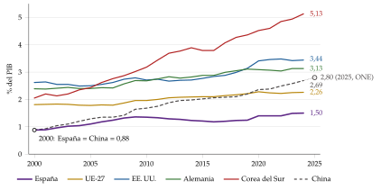
Fuente: elaboración propia con datos de la OCDE (MSTI) y, para la UE-27, de Eurostat (OCDE, 2026; Eurostat, 2026). China 2025: National Bureau of Statistics of China, Ministry of Science and Technology y Ministry of Finance (2026).
Contextualización:
. Desde un punto de vista conceptual:
Llamamos modelos de crecimiento endógeno a los que explican la tasa de crecimiento a largo plazo de la renta por habitante dentro del modelo, como resultado de decisiones económicas (ahorrar, estudiar, investigar) y de la política económica, sin recurrir a una variable que crece a un ritmo dado.
En los modelos neoclásicos [ver tema 3.A.43], la renta por habitante deja de crecer a largo plazo si no hay progreso técnico exógeno. La razón son los rendimientos decrecientes del capital: cada máquina añadida rinde menos que la anterior, y el ahorro solo cambia el nivel de la renta, no su tasa de crecimiento.
Para escapar de ellos hay que romper algún supuesto del modelo neoclásico, y hay 2 caminos, que dan las 2 generaciones de modelos de esta exposición:
cambiar la función de producción para que el rendimiento de lo que se acumula (capital físico, humano o conocimiento) no caiga a cero: modelos de 1.ª generación, desde mediados de los 80;
modelizar la invención como una actividad deliberada y costosa, la I+D, que se paga con rentas de monopolio, lo que exige competencia imperfecta: modelos de 2.ª generación, desde 1990.
Un bien es no rival si su uso por uno no impide que otros lo usen a la vez (una receta, un programa informático) y excluible si se puede impedir que otros lo usen (con una patente o un secreto industrial) [ver tema 3.A.23]. Las ideas son no rivales y parcialmente excluibles, y de ahí nacen los rendimientos crecientes del título: con las mismas ideas, duplicar las máquinas y los trabajadores duplica la producción, y además se pueden mejorar las ideas (Romer, 1990).
Desde un punto de vista histórico:
La pregunta es tan antigua como la economía. Los clásicos vieron ya las 2 fuerzas en juego: la división del trabajo, limitada por la extensión del mercado, frente a los rendimientos decrecientes de la tierra1. A. A. Young (1928) recuperó los rendimientos crecientes de la especialización; Knight (1944) sostuvo que la inversión no tiene por qué rendir cada vez menos si el capital incluye el conocimiento, y Schumpeter (1942, 83) describió la innovación como un proceso que revoluciona la estructura económica «desde dentro», la destrucción creativa.
Los modelos de Solow (1956) y de Ramsey, Cass y Koopmans explican el crecimiento a largo plazo con un progreso técnico exógeno [ver tema 3.A.43]. Arrow (1962b, 155) señaló el problema: «una visión del crecimiento económico que depende tanto de una variable exógena, y además de una tan difícil de medir como la cantidad de conocimiento, difícilmente resulta satisfactoria desde el punto de vista intelectual. […] Las proyecciones de tendencia, por necesarias que sean en la práctica, son en el fondo una confesión de ignorancia y, lo que es peor desde un punto de vista práctico, no son variables de política económica» (traducción propia). Su respuesta fue el aprendizaje por la práctica; la de Uzawa (1965), un sector que produce conocimiento.
En los 70, con las crisis del petróleo, la atención se desplazó a los ciclos económicos, y dentro del crecimiento, a las teorías del desarrollo [ver tema 3.B.28]. La teoría renace a mediados de los 80 con Romer (1986) y Robert E. Lucas Jr. (1988); siguen Barro (1990), L. E. Jones y Manuelli (1990) y Rebelo (1991), y el salto a la innovación llega con Romer (1990), Grossman y Helpman (1991a) y Aghion y Howitt (1992) (Romer, 1994). C. I. Jones (1995a) abrió el debate de los efectos escala, que sigue vivo.
Problemática (preguntas clave):
¿Se puede crecer para siempre sin un progreso técnico exógeno? ¿Basta con acumular capital físico o humano si sus rendimientos no decrecen?
¿Por qué se innova, si las ideas, una vez creadas, las puede usar cualquiera? ¿Innova y crece el mercado lo que conviene a la sociedad?
¿Qué determina la tasa de crecimiento a largo plazo: el ahorro, la educación, la investigación? ¿Y el tamaño del país? ¿Puede la política económica cambiarla, o solo el nivel de la renta?
Estructura:
La exposición sigue los 2 caminos para escapar de los rendimientos decrecientes, en el orden en que aparecieron, y termina con lo que ambos tienen en común, los rendimientos crecientes de las ideas.
I. Modelos de 1.ª generación (I): basta con que el rendimiento de lo que se acumula, capital físico o humano, no caiga a cero para que el ahorro y la educación sostengan el crecimiento. Lo veremos con el modelo \(AK\) y sus variantes y con el capital humano de Uzawa y Lucas. Pero el progreso técnico sigue sin explicarse.
II. Modelos de 2.ª generación (II): el progreso técnico sale de una actividad buscada, la investigación, que se paga con rentas de monopolio. Las innovaciones pueden ampliar el número de bienes (Romer) o mejorar su calidad (Aghion y Howitt), y el mercado no innova lo que conviene.
III. Rendimientos crecientes y efecto escala (III): como las ideas no se gastan al usarlas, en estos modelos los países más poblados crecen más deprisa. Los datos no lo confirman, y el modelo semiendógeno de Jones lo corrige. Cerramos con la evidencia y la política económica.
3.A.44. Crecimiento económico (II)
Introducción2′30″
I. Modelos de 1.ª generación: función de producción no neoclásica11′30″
1. Idea: \(\gamma_c=(r-\rho)/\theta\) con una \(r\) que no cae
2. Modelos: \(AK\), Barro, externalidades, Uzawa-Lucas, Sobelow
3. Valoración
II. Modelos de 2.ª generación: competencia imperfecta y progreso técnico endógeno9′
1. Idea: ideas no rivales
2. Modelos: variedades (Romer), calidades (Aghion-Howitt)
3. Valoración
III. Rendimientos crecientes y efecto escala: el crecimiento semiendógeno6′
1. No rivalidad y efecto escala
2. Jones (1995): \(\gamma_N=\lambda n/(1-\phi)\)
3. Evidencia y política
Conclusión1′
Reparto del cante: introducción, 2′30″; I, 11′30″ (I.1, 1′; I.2, 9′; I.3, 1′30″); II, 9′ (II.1, 1′30″; II.2, 6′30″; II.3, 1′); III, 6′ (III.1, 1′; III.2, 2′30″; III.3, 2′30″), y conclusión, 1′. El hilo del tema es la ecuación de Euler: en cada modelo se dice qué rendimiento \(r\) no cae y a qué tasa crece la economía, y la tabla 4 los recoge todos. Los refranes acompañan a cada idea: «más vale maña que fuerza» (enganche), «quien guarda, halla» (\(AK\)), «quien a buen árbol se arrima, buena sombra le cobija» (externalidades), «a hombros de gigantes» (Romer: \(\dot N=\eta_IL_IN\)) y «rey muerto, rey puesto» (destrucción creativa). Lo que va en cajas grises, en notas y en los anexos es para las preguntas del tribunal.
Para saber más
Paul Romer, «Economic Growth», en The Concise Encyclopedia of Economics (Liberty Fund): el crecimiento como mejores recetas, no solo más cocina: https://www.
econlib. (Romer, 2008).org/ library/ Enc/ EconomicGrowth. html Philippe Aghion y Peter Howitt, «A Model of Growth Through Creative Destruction», versión abierta del artículo de 1992 en el National Bureau of Economic Research (NBER): https://www.
nber. (Aghion y Howitt, 1990).org/ papers/ w3223 Comité del Premio Nobel de Economía de 2025, Sustained Economic Growth through Technological Progress, documento científico sobre las aportaciones de Mokyr, Aghion y Howitt: https://www.
nobelprize. (Committee for the Prize in Economic Sciences in Memory of Alfred Nobel, 2025).org/ uploads/ 2025/ 10/ advanced- economicsciencesprize2025. pdf «Schumpeter te explica… la destrucción creadora», canal de Óscar Vara (vídeo): https://www.
youtube. (Vara, 2019).com/ watch? v= OtSndWOvWik
I. Modelos de acumulación de capital físico y humano (1.ª generación): función de producción no neoclásica
En el cante (11′30″): la idea (1′), con la ecuación de Euler y la tabla 1 dicha de palabra; el \(AK\) con ahorro constante (2′30″), con el gráfico en tasas construido paso a paso (gráficos 2 a 4), «\(AK\): \(r=A-\delta\)», «quien guarda, halla» y 3 de las diferencias con Solow (el ahorro cambia la tasa, no hay convergencia, los choques son permanentes); Barro con ahorro constante (1′30″), con la restricción del Estado, la forma \(AK\), los 2 efectos del impuesto y \(\tau^*=1-\alpha\); las externalidades (1′30″), con los 3 casos y «privado \(<\) social»; Uzawa y Lucas (3′), con los supuestos en orden, las 2 ecuaciones de acumulación y \(r=B-\delta_H\); el Sobelow (0′30″), como cierre: basta con que se incumpla Inada en el infinito, y la valoración (1′30″), de palabra. La tabla 2, la caja de Romer frente a Lucas, la CES, las tasas con la externalidad de Lucas y los anexos son de profundización.
Conclusión anticipada: basta con cambiar la función de producción para que la acumulación de capital sostenga el crecimiento por habitante sin progreso técnico exógeno. Todos los modelos de este bloque comparten un rasgo: el capital, entendido en sentido amplio, no tiene rendimientos decrecientes a largo plazo, y la economía se comporta como si su producción fuera lineal en él. Pero el progreso técnico sigue sin explicarse.
Nexo: partimos del modelo de Solow y de la condición que lo condena a no crecer sin progreso técnico, para levantarla de 5 maneras distintas.
I.1. Idea
La primera salida: abandonar la función de producción neoclásica. Un cambio en ella basta para que la renta por habitante crezca a largo plazo, y con él cambian las predicciones y las recomendaciones de política económica.
Por qué el modelo de Solow deja de crecer: sin progreso técnico, el capital por trabajador crece a \(\gamma_k=s\,f(k)/k-(n+\delta)\) [ver tema 3.A.43]. Por los rendimientos decrecientes y las condiciones de Inada, el producto medio del capital, \(f(k)/k\), cae hacia cero a medida que se acumula, y el crecimiento se apaga en el estado estacionario. El crecimiento sostenido queda a cargo de un progreso técnico exógeno, que es además lo que más pesa: según Solow (1957, 320), el 87,5 % del aumento del producto por hora en Estados Unidos entre 1909 y 1949 se debía al cambio técnico, y solo el 12,5 % al mayor uso de capital.
La clave de todo el tema: con hogares que eligen cuánto ahorrar, el consumo por habitante crece según la ecuación de Euler del modelo de Ramsey, Cass y Koopmans [ver tema 3.A.43]:
\[\gamma_c=\frac{r-\rho}{\theta}\tag{1}\]
donde \(r\) es el rendimiento neto del ahorro, \(\rho\) la tasa de descuento y \(1/\theta\) la elasticidad de sustitución intertemporal.
En el modelo neoclásico, \(r=f'(k)-\delta\) cae a medida que se acumula capital, hasta igualar a \(\rho\), y entonces el consumo deja de crecer.
Los modelos de este bloque son otras tantas formas de conseguir que \(r\) no caiga: en cada uno basta con averiguar qué \(r\) queda en la senda de crecimiento equilibrado para saber a qué tasa crece la economía.
Qué supuesto se levanta: la función de producción neoclásica cumple 3 propiedades, rendimientos constantes a escala, productos marginales positivos y decrecientes y las condiciones de Inada. Cada modelo de este bloque levanta alguna (tabla 1); el resto de supuestos del modelo de Solow (economía cerrada, un solo bien, competencia perfecta, población igual al empleo que crece a \(n\), depreciación \(\delta\)) se mantiene.
| Solow | \(AK\) | Barro | Externalidades | Uzawa-Lucas | Sobelow | |
|---|---|---|---|---|---|---|
| Producción por trabajador | \(f(k)\) neoclásica | \(Ak\) | \(AK^{\alpha}G^{1-\alpha}\) | \(AL^{\eta}k^{\alpha+\eta}\) | \(Ak^{\alpha}(uh)^{1-\alpha}\) | \(Ak+Bk^{\alpha}\) |
| Rendimientos constantes a escala | \(\checkmark\) | \(\checkmark\) | \(\checkmark\) en \(K\) y \(G\) |
\(\times\) crecientes si \(\eta>0\) |
\(\checkmark\) | \(\checkmark\) |
| Producto marginal del capital decreciente | \(\checkmark\) | \(\times\) constante, \(A\) |
\(\times\) social, con \(G=\tau Y\) |
\(\times\) social, si \(\alpha+\eta\geq1\) |
\(\times\) de \(k\) y \(h\) juntos |
\(\checkmark\) |
| Inada en 0: \(f'(0)=\infty\) | \(\checkmark\) | \(\times\) | \(\times\) social |
\(\times\) si \(\alpha+\eta\geq1\) |
\(\checkmark\) en \(k\) |
\(\checkmark\) |
| Inada en \(\infty\): \(f'(\infty)=0\) | \(\checkmark\) | \(\times\) | \(\times\) social |
\(\times\) si \(\alpha+\eta\geq1\) |
\(\times\) educación lineal en \(h\) |
\(\times\) tiende a \(A\) |
| Crecimiento sostenido de \(y\) | No (sin progreso técnico) | Sí | Sí | Sí, si \(\alpha+\eta=1\) | Sí, si \(B>\delta_H+\rho\) | Sí, si \(sA>n+\delta\) |
Con \(\checkmark\), el supuesto se cumple; con \(\times\), se levanta. «Social»: teniendo en cuenta que el gasto público o el conocimiento crecen con el capital de toda la economía, lo que cada empresa no internaliza. La CES con elasticidad de sustitución mayor que 1, una variante del Sobelow (apartado I.2.5), levanta además \(F(0,L)=0\): ningún factor es imprescindible. Fuente: elaboración propia a partir de Barro y Sala-i-Martin (2004, caps. 1, 4 y 5), Acemoglu (2009, cap. 11) y L. E. Jones y Manuelli (1990).
La lección de la tabla: todos los modelos levantan la última condición de Inada, \(f'(\infty)=0\), y todos salvo el último, el Sobelow, levantan también los productos marginales decrecientes del capital. Por eso el Sobelow cierra el bloque: muestra que para crecer sin progreso técnico exógeno no hace falta que los rendimientos del capital sean constantes en todo el recorrido; basta con que su producto marginal no tienda a cero cuando el capital crece. Los rendimientos no decrecientes son una condición suficiente, no necesaria (L. E. Jones y Manuelli, 1990).
Notación del tema
Las mayúsculas son agregados (\(Y_t\), \(K_t\), \(L_t\), \(C_t\), \(H_t\)). Las minúsculas sin virgulilla son por trabajador (por habitante): \(k\equiv K/L\), \(y\equiv Y/L\), \(c\equiv C/L\) y \(h\equiv H/L\). Con virgulilla, como en el 3.A.43, por unidad de trabajo eficiente: solo aparecen en el modelo de Romer con ahorro constante, donde las variedades hacen de tecnología, \(\tilde k\equiv K/(NL_Y)\) e \(\tilde y\equiv Y/(NL_Y)\) [ver tema 3.A.43]. En el resto no hay progreso técnico exógeno y no hacen falta. La población, igual al empleo, crece a la tasa \(n\).
Un punto encima es la derivada respecto al tiempo, \(\dot k_t\equiv dk_t/dt\), y \(\gamma_X\equiv\dot X/X\) es la tasa de crecimiento de \(X\). Como \(k=K/L\), \(\gamma_k=\gamma_K-n\). En una senda de crecimiento equilibrado, \(\gamma\) sin subíndice es la tasa común de \(c\), \(k\) e \(y\).
Los hogares tienen utilidad isoelástica, \(u(c)=(c^{1-\theta}-1)/(1-\theta)\) con \(\theta>0\), y descuentan a la tasa \(\rho\); como la familia crece a \(n\), el descuento efectivo es \(\rho-n\), y la utilidad está acotada si \(\rho-n>(1-\theta)\,\gamma\) [ver tema 3.A.43].
\(A\) es una constante, la productividad del capital en sentido amplio o del sector de bienes: no es progreso técnico. \(B\) es la productividad del sector educativo de Uzawa y Lucas y, en el Sobelow, el peso de la parte neoclásica (letras locales de apartados distintos); con subíndice, \(B_j\), será el beneficio del monopolista en el bloque II.
I.2. Modelos
El orden: empezamos por el modelo más sencillo, el \(AK\). Después vienen 2 formas de «fabricar» un \(AK\) con supuestos más realistas, el gasto público productivo y las externalidades del capital, y el capital humano, que es el segundo epígrafe del título. Todos levantan los productos marginales decrecientes del capital. Cerramos con el Sobelow, que los mantiene y muestra que basta con menos: que el producto marginal del capital no tienda a cero.
Con ahorro constante, casi todos se leen en el mismo gráfico en tasas de crecimiento que el modelo de Solow, que se va construyendo paso a paso.
I.2.1. El modelo \(AK\) (Rebelo, 1991)
a) Idea
La pregunta: ¿qué pasa si el capital no tiene rendimientos decrecientes? Es el cambio más pequeño posible respecto al modelo de Solow: todo igual, salvo la función de producción, que pasa a ser lineal en el capital, la tecnología \(AK\): \[Y_t=A\,K_t,\qquad A>0\ \text{constante}.\tag{2}\] Su introducción en la literatura moderna se atribuye a Rebelo (1991); la primera función de producción de este tipo es la de von Neumann (1937) (Barro y Sala-i-Martin, 2004, 63, n. 29), y la idea de que el capital, si incluye el conocimiento, no tiene por qué rendir cada vez menos es de Knight (1944)2.
¿Y el trabajo? Que no aparezca es menos extraño de lo que parece si \(K\) se entiende en sentido amplio: capital físico, capital humano y conocimiento. Para que una persona sea productiva hay que invertir en ella (alimentación, salud, educación), renunciando a consumo presente, igual que para construir una máquina. Si todos los factores se acumulan así y hay rendimientos constantes a escala en todos ellos, la producción es proporcional al capital amplio (Sala-i-Martín, 2000).
\(A\) no es progreso técnico: es una constante, la productividad del capital amplio. La economía no aprende nada nuevo: crece solo acumulando.
b) Modelo
i) Supuestos
Lo que se mantiene: los supuestos del modelo de Solow [ver tema 3.A.43]: economía cerrada y sin sector público, un solo bien que se consume o se invierte, competencia perfecta en bienes y factores, población igual al empleo, que crece a la tasa \(n\), y depreciación \(\delta\).
Lo que cambia: la función de producción (2), que levanta los productos marginales decrecientes y las condiciones de Inada sobre el producto marginal (tabla 1). Con competencia perfecta, el capital cobra su producto marginal, \(r+\delta=A\), y por el teorema de Euler se lleva toda la renta.
El ahorro: una tasa de ahorro constante, \(s\), como en el modelo de Solow, que es la versión que se desarrolla y da la lectura gráfica. Con hogares que eligen cuánto ahorrar, como en el de Ramsey, Cass y Koopmans, se llega a los mismos resultados, y se ve a continuación.
ii) Desarrollo
Con ahorro constante, la ley de movimiento del capital por trabajador es la de Solow con \(f(k)=Ak\): \[\dot k_t=s\,A\,k_t-(n+\delta)\,k_t\quad\Longrightarrow\quad \gamma_k=\gamma_y=s\,A-(n+\delta).\tag{3}\]
En niveles (gráfico 2, izquierda), la producción, \(Ak\), el ahorro, \(sAk\), y la inversión necesaria para mantener el capital por trabajador, \((n+\delta)k\), son rectas que salen del origen: si \(sA>n+\delta\), nunca se cortan y la distancia entre el ahorro y la reposición crece con \(k\).
En tasas se parte del modelo de Solow (gráfico 2, derecha): la curva de depreciación, \(n+\delta\), es una horizontal, y la curva de ahorro, \(s\,f(k)/k\), decrece con \(k\) por los rendimientos decrecientes y la corta en el estado estacionario, \(k^*\).
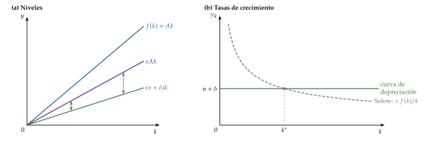
Fuente: elaboración propia a partir de Sala-i-Martín (2000) y Barro y Sala-i-Martin (2004, cap. 4).
Con la tecnología \(AK\), la curva de ahorro, \(s\,f(k)/k=sA\), pasa a ser una horizontal, como la de depreciación (gráfico 3). Si \(sA>n+\delta\), la distancia entre ambas es la tasa de crecimiento, \(\gamma=sA-(n+\delta)\), y es la misma para cualquier \(k\): ya no hay estado estacionario.
La intuición: con poco capital, se ahorra la fracción \(s\) de la producción y cada unidad invertida rinde \(A\), así que el capital aumenta en \(sAk\), un \(sA\) por unidad; con mucho capital ocurre lo mismo, porque el producto medio no cae. Restando la depreciación y la dilución por el crecimiento de la población, \(n+\delta\), la tasa neta no cambia nunca.
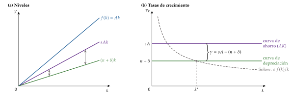
Fuente: elaboración propia a partir de Sala-i-Martín (2000) y Barro y Sala-i-Martin (2004, cap. 4).
Con hogares de Ramsey, que maximizan \(\int_0^{\infty}e^{-(\rho-n)t}(c_t^{1-\theta}-1)/(1-\theta)\,dt\) sujetos a la restricción de recursos por trabajador, \(\dot k_t=(A-\delta-n)\,k_t-c_t\), las empresas igualan el producto marginal del capital a su coste de uso, de modo que el tipo de interés es constante, \(r=A-\delta\). Con la ecuación de Euler (1): \[\gamma_c=\gamma_k=\gamma_y=\frac{A-\delta-\rho}{\theta}\equiv\gamma.\tag{4}\]
El consumo, proporción constante del capital: dividiendo la restricción por \(k\), \(\gamma_k=A-\delta-n-c/k\). Si \(\gamma_k\) fuera distinta de \(\gamma_c\), la ratio \(c/k\) crecería o caería sin límite: si crece, el capital acabaría siendo negativo; si cae, el valor del capital no se agotaría y se violaría la condición de transversalidad. Por eso la economía salta desde el principio a la senda de crecimiento equilibrado, con \(\gamma_k=\gamma_c=\gamma\) y \[\frac{c}{k}=A-\delta-n-\gamma,\qquad s=1-\frac{c}{Ak}=\frac{\gamma+n+\delta}{A}:\] la tasa de ahorro, que ahora sale del modelo, es constante, y se vuelve a la versión anterior.
Hay crecimiento si el rendimiento neto del capital supera la impaciencia, \(A-\delta>\rho\), y la utilidad está acotada si \(c/k>0\), es decir, si \(\rho-n>(1-\theta)\,\gamma\).
Sin externalidades ni poder de mercado, el equilibrio competitivo coincide con el óptimo del planificador: se cumple el primer teorema fundamental de la economía del bienestar (1TFEB) [ver tema 3.A.22].
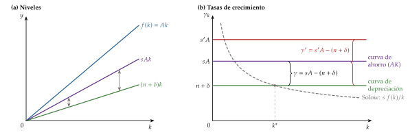
Fuente: elaboración propia a partir de Sala-i-Martín (2000) y Barro y Sala-i-Martin (2004, cap. 4).
iii) Implicaciones: el \(AK\) frente al modelo de Solow
Crecimiento endógeno: la renta por habitante crece a una tasa positiva sin que ninguna variable crezca por sí sola. Es la propiedad que da nombre a estos modelos.
La política importa para el crecimiento: lo que sube el ahorro (o reduce la impaciencia), aumenta \(A\) o reduce \(n\) o \(\delta\) eleva la tasa de crecimiento, y para siempre: en el gráfico en tasas, la curva de ahorro salta de \(sA\) a \(s'A\) y la distancia con la de depreciación aumenta (gráfico 4). «Quien guarda, halla»: ahorrar más no da solo más renta, sino más crecimiento. Es la tesis de Rebelo (1991): un impuesto sobre las rentas del capital, \(\tau_K\), reduce el rendimiento neto y con él el crecimiento, \(\gamma=[(1-\tau_K)A-\delta-\rho]/\theta\), y las diferencias de política fiscal pueden explicar diferencias persistentes de crecimiento entre países.
Sin dinámica de transición: como el producto medio del capital no cae, la economía crece al mismo ritmo con poco o con mucho capital.
Sin convergencia: la tasa de crecimiento no depende del nivel de renta, así que los países pobres no crecen más deprisa que los ricos, ni en términos absolutos ni condicionales. Por eso la convergencia se convirtió en la prueba empírica entre los 2 enfoques [ver tema 3.A.45].
Los choques son permanentes: si una guerra o un terremoto destruyen parte del capital, la economía no crece después más deprisa para volver a su senda: sigue al mismo ritmo desde un nivel más bajo, y la pérdida es permanente.
No hay ineficiencia dinámica (Saint-Paul, 1992): la economía sería dinámicamente ineficiente si el tipo de interés fuera menor que el crecimiento de la producción agregada, \(\gamma_Y=\gamma+n\) [ver tema 3.A.43]. Con hogares, \(r-\gamma_Y=A-\delta-\gamma-n=c/k>0\); con ahorro constante, \(\gamma_Y=sA-\delta<A-\delta=r\), porque \(s<1\). Ahorrar más nunca es «demasiado»: sube el crecimiento.
| Solow | \(AK\) | |
|---|---|---|
| Crecimiento de \(y\) a largo plazo | El del progreso técnico, exógeno | \(sA-(n+\delta)\), o \((A-\delta-\rho)/\theta\): positivo sin variable exógena |
| Efecto de \(s\) (o \(\rho\) y \(\theta\)), \(A\), \(n\) y \(\delta\) | Solo en el nivel de la renta | En la tasa de crecimiento, para siempre |
| Dinámica de transición | Sí, hacia el estado estacionario | No: crece siempre a la misma tasa |
| Convergencia | Condicional | Ninguna |
| Destrucción temporal de capital | Se recupera la senda anterior | Pérdida permanente de nivel |
| Ineficiencia dinámica | Posible, si \(s>s_{\mathrm{oro}}\) | Imposible: \(r>\gamma_Y\) |
Fuente: elaboración propia a partir de Sala-i-Martín (2000), Barro y Sala-i-Martin (2004, cap. 4) y Saint-Paul (1992).
c) Extensiones
Rebelo (1991) no necesita que todo sea capital: basta con un núcleo de bienes de capital que se produzca solo con bienes de capital, sin factores no reproducibles como la tierra o el trabajo no cualificado. Ese núcleo crece con una tecnología \(AK\) y arrastra al resto de la economía. Si, por ejemplo, el bien de consumo se produce con capital y trabajo y el de inversión solo con capital y de forma lineal, el capital crece a una tasa constante, el consumo crece a una fracción de ella y los salarios son positivos: lo que tiene que ser lineal no es la función de producción, sino la tecnología con la que se acumulan los factores reproducibles (Acemoglu, 2009, 395-98).
El gasto público productivo, las externalidades del capital y el capital humano son formas de llegar a una tecnología \(AK\) desde supuestos más realistas: se ven a continuación.
d) Evidencia empírica
C. I. Jones (1995b): en Estados Unidos y en los demás grandes países de la Organización para la Cooperación y el Desarrollo Económicos (OCDE), las tasas de inversión subieron durante la posguerra sin que la tasa de crecimiento mostrara una tendencia al alza, contra lo que predice el \(AK\).
Easterly et al. (1993): las tasas de crecimiento de los países cambian mucho de una década a otra, mientras que sus características (ahorro, educación, instituciones) son persistentes. Un modelo en el que la tasa de crecimiento depende solo de parámetros persistentes casa mal con ello.
Los datos muestran convergencia condicional, a un ritmo de en torno al 2 % anual (Barro y Sala-i-Martin, 1992a), que el \(AK\) no tiene [ver tema 3.A.45]. La crítica admite un matiz: en el modelo de Solow con una Cobb-Douglas, la velocidad de convergencia es \((1-\alpha)(g+n+\delta)\). Con \(g+n+\delta\approx0{,}08\) y una participación del capital físico de 0,3, predice un 5,6 % anual, demasiado; para bajar al 2 % hace falta \(\alpha\approx0{,}75\), razonable si el capital incluye el humano. Con \(\alpha=1\) se llega al \(AK\), sin convergencia: si esta es lenta, un Solow con capital amplio y un \(AK\) se distinguen mal en horizontes largos (Barro y Sala-i-Martin, 2004, 58-59 y 210).
e) Valoración
A favor: es la forma más sencilla de obtener crecimiento endógeno, y la forma reducida de casi todos los modelos de 1.ª generación, que acaban escondiendo, en algún supuesto, una tecnología lineal en algún tipo de capital.
En contra:
es un caso de filo de la navaja: exige que el exponente del capital sea exactamente 1; con algo menos vuelve el modelo de Solow y, con algo más, el crecimiento explosivo (Solow, 1994);
el capital se lleva toda la renta y el salario es nulo (nota 2). En las variantes con trabajo en las que el producto marginal del capital tiende a una constante, como el Sobelow, la participación del capital tiende a 1 a medida que se acumula, contra la estabilidad de las participaciones de los hechos de Kaldor [ver tema 3.A.43];
predice que la distribución mundial de la renta se ensancha sin límite, frente a su relativa estabilidad desde la posguerra (Acemoglu, 2009, 403);
no explica el progreso técnico, que la contabilidad del crecimiento señala como fuente principal del crecimiento [ver tema 3.A.45], ni predice la convergencia condicional que se observa.
Nexo: el filo de la navaja lleva a los modelos que explican por qué el capital amplio podría tener rendimientos constantes, empezando por el gasto público; la falta de convergencia, al Sobelow, que la recupera y cierra el bloque.
I.2.2. Un modelo \(AK\) con gasto público productivo (Barro, 1990)
a) Idea
La pregunta: ¿puede el gasto público generar crecimiento sostenido, y qué tamaño del Estado lo maximiza? Hay un dilema: el gasto productivo (infraestructuras, justicia, seguridad, investigación3) hace más productivo el capital privado, pero hay que financiarlo con impuestos, que reducen el rendimiento de invertir. Si el gasto no fuera productivo, solo quedaría el segundo efecto y su tamaño óptimo sería nulo.
Es un modelo \(AK\) con una justificación: el gasto público hace que el capital privado no tenga rendimientos decrecientes4. Su tema de referencia es el de la política fiscal y el crecimiento [ver tema 3.A.38]; aquí interesa como vía de crecimiento endógeno.
b) Modelo
i) Supuestos
Producción: con capital privado y un flujo de bienes y servicios que suministra el Estado, \(G_t\) (infraestructuras, justicia, seguridad), que todas las empresas usan a la vez, con rendimientos constantes en los 2 y decrecientes en cada uno: \[Y_t=A\,K_t^{\alpha}\,G_t^{1-\alpha},\qquad 0<\alpha<1.\] Por trabajador, con el gasto público por trabajador, \(G_t/L_t\) (sin letra propia, para no confundirlo con el progreso técnico), \(y_t=A\,k_t^{\alpha}\,(G_t/L_t)^{1-\alpha}\).
Sector público: financia el gasto con un impuesto proporcional sobre la renta (o, lo que es lo mismo, sobre la producción), de tipo \(\tau\) constante. La parte de la renta que no es disponible, \(\tau Y_t\), es la recaudación, y la renta disponible por trabajador es \((1-\tau)\,y_t\).
Presupuesto equilibrado: \(G_t=\tau Y_t\). Los gobiernos pueden endeudarse, pero a largo plazo lo que se pide prestado hay que devolverlo y los gastos tienden a igualar a los ingresos [ver tema 3.A.39]; como interesa el largo plazo, el déficit se deja fuera.
Ahorro: como en el modelo de Solow, los hogares ahorran (e invierten) una fracción constante, \(s\), de su renta disponible; la población crece a \(n\) y el capital se deprecia a \(\delta\). Las empresas toman \(G\) como dado.
ii) Desarrollo
Acumulación: el capital por trabajador aumenta con el ahorro y disminuye con la depreciación y la dilución, \[\dot k_t=s\,(1-\tau)\,y_t-(n+\delta)\,k_t=s\,(1-\tau)\,A\,k_t^{\alpha}\left(\frac{G_t}{L_t}\right)^{1-\alpha}-(n+\delta)\,k_t,\] y, dividiendo por \(k_t\), \[\gamma_k=s\,(1-\tau)\,A\left(\frac{G_t/L_t}{k_t}\right)^{1-\alpha}-(n+\delta).\] La tasa de crecimiento sube con el gasto público y baja con el tipo impositivo; pero los 2 no son independientes, porque para gastar el Estado tiene que recaudar.
Restricción del Estado: dividiendo \(G=\tau Y\) por \(L\) y sustituyendo la función de producción, \[\frac{G_t}{L_t}=\tau A\,k_t^{\alpha}\left(\frac{G_t}{L_t}\right)^{1-\alpha}\ \Longrightarrow\ \left(\frac{G_t}{L_t}\right)^{\alpha}=\tau A\,k_t^{\alpha}\ \Longrightarrow\ \frac{G_t}{L_t}=(\tau A)^{1/\alpha}\,k_t.\] El gasto por trabajador es proporcional al capital por trabajador.
Es un \(AK\): sustituyendo en la función de producción, \(y_t=A^{1/\alpha}\,\tau^{(1-\alpha)/\alpha}\,k_t\equiv\bar A\,k_t\), con \(\bar A\) constante. Una vez incorporada la restricción del Estado, la producción es lineal en el capital, y todas las tasas son iguales y constantes desde el principio, sin transición: \[\gamma_c=\gamma_y=\gamma_k=\gamma_{G/L}=s\,\textcolor{tceerojo}{(1-\tau)}\,A^{1/\alpha}\,\textcolor{tceeverde}{\tau^{(1-\alpha)/\alpha}}-(n+\delta).\tag{5}\] Las variables agregadas crecen a esa tasa más \(n\).
2 efectos del impuesto sobre el crecimiento:
negativo, a través de \((1-\tau)\): el impuesto reduce la renta disponible y, con ella, el ahorro y la inversión;
positivo, a través de \(\tau^{(1-\alpha)/\alpha}\): un tipo mayor permite más gasto público productivo, que hace más productivo el capital privado y aumenta la producción con que se ahorra.
El tipo que maximiza el crecimiento: con tipos bajos domina el efecto positivo; al subir el tipo, lo compensa cada vez más el negativo. Derivando \((1-\tau)\,\tau^{(1-\alpha)/\alpha}\) respecto a \(\tau\): \[\frac{d}{d\tau}\left[(1-\tau)\,\tau^{\frac{1-\alpha}{\alpha}}\right]=\tau^{\frac{1-\alpha}{\alpha}-1}\left[\frac{1-\alpha}{\alpha}(1-\tau)-\tau\right]=0\quad\Longrightarrow\] \[\tau^*=\frac{G}{Y}=1-\alpha.\tag{6}\] El corchete es positivo para \(\tau<1-\alpha\) y negativo para \(\tau>1-\alpha\): es un máximo.
El crecimiento sube con el tipo mientras \(\tau<1-\alpha\) y baja después: tiene forma de U invertida (gráfico 5). Con \(\tau=0\) no hay gasto público y el capital no produce; con \(\tau=1\) no queda renta para ahorrar: en los 2 extremos, el capital por trabajador cae a la tasa \(n+\delta\).
El tipo óptimo coincide con la elasticidad de la producción al gasto público. En \(\tau^*\) se cumple la regla de Barro: \(\partial Y/\partial G=(1-\alpha)Y/G=1\), el gasto productivo se lleva hasta que su producto marginal iguala su coste5.
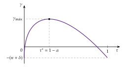
Los 2 efectos en el gráfico (gráfico 6): a la izquierda de \(\tau^*\) domina el efecto positivo del gasto, y subir el tipo acelera el crecimiento; a la derecha domina el efecto negativo del impuesto, y subirlo lo frena.
Con hogares de Ramsey se obtienen los mismos resultados: el hogar recibe por su capital \(r=(1-\tau)\,\alpha\,A^{1/\alpha}\tau^{(1-\alpha)/\alpha}-\delta\), que no cae; el tipo entra de la misma forma, \((1-\tau)\,\tau^{(1-\alpha)/\alpha}\), y el que maximiza el crecimiento vuelve a ser \(\tau^*=1-\alpha\) (anexo A).

iii) Implicaciones
El tamaño del Estado afecta al crecimiento a largo plazo: hay un tamaño óptimo del gasto productivo, \(G/Y=1-\alpha\). Por debajo, más gasto acelera el crecimiento; por encima, lo frena [ver tema 3.A.38].
La composición del gasto importa: el gasto improductivo solo tiene el efecto negativo de su financiación, y su tamaño óptimo sería nulo; y no todos los impuestos frenan igual el crecimiento.
El equilibrio no es óptimo: el hogar recibe por su capital solo la fracción \(\alpha\) de lo que rinde a la sociedad. El planificador, que elige \(G/Y=1-\alpha\) y no grava el margen de la inversión, crecería más; con un impuesto de suma fija que financiara el mismo gasto, el equilibrio alcanzaría el óptimo (Barro y Sala-i-Martin, 2004, § 4.4) (anexo A).
Matices: el gasto productivo rinde más si va acompañado de reformas de oferta que permitan aprovecharlo (invertir en educación rinde menos con un mercado de trabajo muy rígido), y, en un modelo de equilibrio general, sus efectos sobre la producción son mayores a largo plazo que a corto (Baxter y King, 1993).
c) Extensiones
Con servicios públicos sujetos a congestión, lo que importa es el gasto en relación con el tamaño de la economía, y un impuesto proporcional actúa como un precio por su uso (Barro y Sala-i-Martin, 1992b). Con un stock de capital público acumulable, en lugar de un flujo, el modelo tiene dinámica de transición.
d) Evidencia empírica
Aschauer (1989) estimó una elasticidad de la producción de Estados Unidos al capital público cercana a 0,4, que implicaría rendimientos enormes. Los estudios posteriores dan valores mucho menores: el metaanálisis de Bom y Ligthart (2014), con 578 estimaciones de 68 estudios, la sitúa en 0,083 a corto plazo y 0,122 a largo para el capital público de la Administración central, y en casi el doble para las infraestructuras básicas de las Administraciones regionales y locales. El gasto en infraestructuras es productivo, pero no tanto como para sostener por sí solo el crecimiento.
e) Valoración
A favor: da una base al tamaño óptimo del sector público productivo y a la idea de que la composición del gasto y la forma de financiarlo importan para el crecimiento.
En contra: hereda el filo de la navaja del \(AK\) (rendimientos constantes en \(K\) y \(G\) a la vez); trata el gasto como un flujo productivo sin distinguir partidas, sin deuda ni congestión, y su regla depende de una elasticidad mal medida.
Nexo: el motor aquí es el Estado. ¿Puede serlo la propia inversión privada? Es lo que proponen los modelos de externalidades.
I.2.3. Externalidades del capital: aprendizaje por la práctica (Arrow, 1962b; Romer, 1986)
a) Idea
La regularidad: en la industria aeronáutica, las horas de trabajo necesarias para fabricar la estructura de un avión (sin motores) bajaban con el número de estructuras ya fabricados (Wright, 1936). Es la curva de aprendizaje de la empresa [ver tema 3.A.12]. Arrow (1962b) la generaliza: el conocimiento es un subproducto de producir e invertir, el aprendizaje por la práctica (learning by doing).
El desbordamiento: como el conocimiento es no rival y difícil de proteger, lo que aprende una empresa se desborda a las demás. Romer (1986)6 lleva la idea a un modelo de crecimiento: la inversión de cada empresa aumenta el conocimiento de toda la economía. En el artículo original, las empresas invierten en conocimiento a propósito, con rendimientos decrecientes, pero no pueden patentarlo ni guardarlo del todo; los manuales lo simplifican como un subproducto no buscado de la inversión, que es la versión que sigue (Romer, 1986, 1003). «Quien a buen árbol se arrima, buena sombra le cobija»: cada empresa se beneficia del conocimiento que acumulan las demás.
La consecuencia: el rendimiento social del capital es mayor que el privado. Cada empresa tiene rendimientos decrecientes, pero la economía en conjunto puede no tenerlos; y como nadie cobra por el conocimiento que regala, se invierte menos de lo que conviene: es una externalidad positiva [ver tema 3.A.23].
b) Modelo
i) Supuestos
Los del modelo de Solow (o de Ramsey) con empresas competitivas que producen con \[Y_{j}=A\,K_{j}^{\alpha}\,L_{j}^{1-\alpha}\,E^{\eta},\qquad 0<\alpha<1,\ \ \eta\geq0,\tag{7}\] donde \(E\) es el conocimiento de la economía, que cada empresa \(j\) toma como dado, y \(\eta\), la elasticidad de la producción a la externalidad (con \(\eta=0\), una Cobb-Douglas). Cada empresa tiene rendimientos constantes en sus factores; la economía, crecientes si \(\eta>0\).
El conocimiento depende de la experiencia acumulada, medida por el capital: en Romer (1986), el capital agregado de la economía, \(E=K\), porque el capital acumulado es un buen índice de la experiencia acumulada: lo que invierte una empresa hace más productivas a todas.
La población es constante, \(L\), y, para la lectura gráfica, se ahorra una fracción constante, \(s\), de la renta (con hogares de Ramsey se llega a los mismos resultados).
ii) Desarrollo
Con \(E=K=Lk\) y todas las empresas iguales, la producción por trabajador es \(y=A\,L^{\eta}\,k^{\alpha+\eta}\), y en tasas, con ahorro constante y sin crecimiento de la población, \[\gamma_k=s\,A\,L^{\eta}\,k^{\alpha+\eta-1}-\delta.\] El resultado depende de los rendimientos del capital en sentido amplio, \(\alpha+\eta\), el efecto directo más el de la externalidad. Los 3 casos se leen en el gráfico en tasas de crecimiento, que se construye panel a panel.
\(\alpha+\eta<1\): la externalidad es pequeña y quedan rendimientos decrecientes. La curva de ahorro decrece con \(k\) y corta a la de depreciación, \(\delta\): el modelo es el de Solow, con estado estacionario estable y convergencia condicional (gráfico 7).
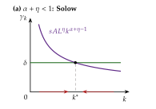
Fuente: elaboración propia a partir de Sala-i-Martín (2000) y Barro y Sala-i-Martin (2004, § 4.3).
\(\alpha+\eta=1\): rendimientos constantes. La curva de ahorro es una horizontal, \(sAL^{1-\alpha}\): es el \(AK\), con \(\gamma=s\,A\,L^{1-\alpha}-\delta\) para cualquier \(k\) y sin estado estacionario (gráfico 8).
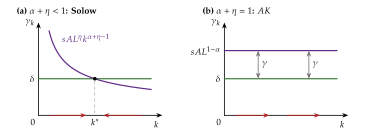
Fuente: elaboración propia a partir de Sala-i-Martín (2000) y Barro y Sala-i-Martin (2004, § 4.3).
\(\alpha+\eta>1\): rendimientos crecientes. La curva de ahorro crece con \(k\): el estado estacionario es inestable, y la economía o se hunde o crece cada vez más deprisa (gráfico 9).
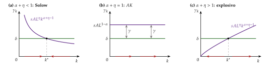
Fuente: elaboración propia a partir de Sala-i-Martín (2000) y Barro y Sala-i-Martin (2004, § 4.3).
Con hogares de Ramsey y \(\alpha+\eta=1\), la producción por trabajador es \(y=A\,L^{1-\alpha}\,k\), pero cada empresa remunera el capital con su producto marginal privado, \(\partial Y_j/\partial K_j=\alpha A\,L^{1-\alpha}\), mientras que el social es \(A\,L^{1-\alpha}\): \[\gamma^{\mathrm E}=\frac{\alpha A\,L^{1-\alpha}-\delta-\rho}{\theta}\quad<\quad\gamma^{\mathrm P}=\frac{A\,L^{1-\alpha}-\delta-\rho}{\theta},\] con \(\gamma^{\mathrm E}\) la tasa de equilibrio y \(\gamma^{\mathrm P}\) la del planificador.
Efecto escala: la productividad del capital, \(A\,L^{1-\alpha}\), y con ella la tasa de crecimiento, aumentan con el tamaño de la población (Barro y Sala-i-Martin, 2004, § 4.3).
Romer (1986) frente a Lucas (1988): dónde está la externalidad
Los 2 modelos son iguales salvo en la variable que mide la experiencia acumulada: \[\underbrace{Y_t=A\,K_t^{\alpha}L_t^{1-\alpha}K_t^{\eta}}_{\text{Romer (1986): capital agregado}}\qquad\qquad\underbrace{Y_t=A\,K_t^{\alpha}L_t^{1-\alpha}k_t^{\eta}}_{\text{Lucas (1988): capital por trabajador}}\]
Con el capital por trabajador, \(E=k\), la producción por trabajador es \(y=A\,k^{\alpha+\eta}\): los 3 casos son los mismos y, con \(\alpha+\eta=1\), \(\gamma=sA-(n+\delta)\), y, con hogares, \(r=\alpha A-\delta\) (privado) frente a \(A-\delta\) (social). Pero desaparece el efecto escala: el tamaño de la población no afecta al crecimiento.
En el test, esta variante aparece como «modelo de Lucas (1988) de externalidades» (junio de 2024, pregunta 25: «el modelo \(AK\) es considerado en ocasiones como un caso particular del modelo de Lucas de externalidades», respuesta correcta). Conviene saber ambos nombres, aunque en el artículo de Robert E. Lucas Jr. (1988) la externalidad es la del capital humano medio (apartado I.2.4) (Barro y Sala-i-Martin, 2004, § 4.3) (Acemoglu, 2009, cap. 11).
iii) Implicaciones
Rendimientos crecientes compatibles con la competencia: como son externos a cada empresa, cada una sigue siendo precio-aceptante. Es la primera forma de introducir los rendimientos crecientes del título sin abandonar la competencia perfecta.
El equilibrio no es eficiente: los agentes no internalizan la externalidad y falla el primer teorema fundamental de la economía del bienestar [ver tema 3.A.22]. Se invierte y se crece menos de lo óptimo, y, a diferencia de lo que ocurre en el modelo de Solow, la política puede subir la tasa de crecimiento a largo plazo: con subvenciones a la inversión o desgravaciones del capital (una corrección pigouviana) o con inversión pública. Una subvención a la compra de capital de tipo \(1-\alpha\), o a la producción de tipo \((1-\alpha)/\alpha\), financiada con un impuesto de suma fija, iguala el rendimiento privado al social y lleva al óptimo (Barro y Sala-i-Martin, 2004, 217-18).
Efecto escala: con \(E=K\), la tasa de crecimiento aumenta con la población y, si la población crece, el crecimiento se acelera sin límite. Con \(E=k\) desaparece. El efecto escala es la cara macroeconómica de la no rivalidad del conocimiento, y vuelve en el bloque III.
c) Evidencia empírica
De Long y Summers (1991): la inversión en bienes de equipo se asocia con un crecimiento mucho mayor del que explicaría su rendimiento privado, lo que sugiere desbordamientos.
Las curvas de aprendizaje están bien documentadas en industrias concretas (aviones, barcos, semiconductores, paneles solares) [ver tema 3.A.12]; que tengan el tamaño necesario para dar rendimientos constantes a toda la economía, no.
d) Valoración
A favor: explica por qué el capital podría no tener rendimientos decrecientes a escala agregada sin abandonar la competencia, y da un fundamento a la intervención.
En contra: el crecimiento sostenido exige de nuevo un filo de la navaja (\(\alpha+\eta=1\) exactamente); con \(E=K\) aparece un efecto escala que la evidencia no apoya, y el progreso técnico sigue siendo un subproducto no buscado. Tampoco distingue el capital humano, que se acumula de forma distinta del físico.
Nexo: esto último lo resuelve el modelo de Uzawa y Lucas.
I.2.4. El modelo de Uzawa (1965) y Lucas (1988): la acumulación de capital humano
a) Idea
La pregunta: ¿puede la acumulación de capital humano sostener el crecimiento? El \(AK\) trata el capital humano como si fuera físico, y Mankiw, Romer y Weil lo acumulan igual que el físico, con rendimientos decrecientes, de modo que solo explica diferencias de nivel [ver tema 3.A.43]. Pero los 2 capitales se producen de forma distinta: una máquina se fabrica con producción; el capital humano se forma dedicando tiempo de las personas, que es a su vez capital humano, a aprender [ver tema 3.A.25]. En los países desarrollados, la inversión más importante en capital humano es la educación.
Los autores: Uzawa (1965) plantea un sector que produce conocimiento con trabajo, y Robert E. Lucas Jr. (1988) lo reinterpreta como capital humano y le añade una externalidad: la productividad de cada persona depende también del capital humano medio de las demás.
La clave: si la educación usa sobre todo capital humano y no tiene rendimientos decrecientes en él, el sector educativo es un \(AK\) en \(h\) que arrastra a toda la economía.
b) Modelo
i) Supuestos
Los supuestos se presentan en el orden en que se usan: quién decide, con qué recursos, cómo se produce con ellos y cómo se acumulan.
1. Economía y población: economía cerrada y sin sector público, con un solo bien, que se consume o se invierte en capital físico. La población, igual al empleo, \(L_t\), crece a la tasa \(n\), y las variables en minúscula son por trabajador: capital físico \(k\equiv K/L\), capital humano \(h\equiv H/L\), producción \(y\equiv Y/L\) y consumo \(c\equiv C/L\).
2. Hogares de Ramsey: idénticos, racionales y de horizonte infinito (un hogar como dinastía de generaciones unidas por el altruismo (Barro, 1974)), con utilidad instantánea isoelástica, \((c^{1-\theta}-1)/(1-\theta)\) (sin la letra \(u\), que aquí es el reparto del tiempo), y tasa de descuento \(\rho\); como la familia crece a \(n\), el descuento efectivo es \(\rho-n\). La tasa de ahorro no es exógena: el capital físico se acumula con lo que no se consume.
3. Las 2 decisiones: cada momento, el hogar elige cuánto consumir, \(c_t\), y cómo reparte su tiempo: dedica la fracción \(u_t\in[0,1]\) a producir bienes y el resto, \(1-u_t\), a formarse. Son las 2 variables de control del modelo.
4. El capital humano es rival: son los conocimientos y las habilidades de las personas, que se usan con su tiempo. La hora que se dedica a estudiar no se dedica a producir: el capital humano se reparte entre los 2 sectores, \(H=H^Y+H^H\), con \(H^Y=uH\) y \(H^H=(1-u)H\). Es la diferencia con las ideas del bloque II, que no son rivales.
5. Sector de bienes: produce con capital físico y el capital humano que se dedica a él, con una Cobb-Douglas con rendimientos constantes a escala, productividad \(A>0\) y, en Robert E. Lucas Jr. (1988), una externalidad: \[y_t=A\,k_t^{\alpha}\,(u_th_t)^{1-\alpha}\,h_{a,t}^{\eta},\qquad 0<\alpha<1,\ \ \eta\geq0,\] donde \(h_a\) es el capital humano medio de la economía, que cada hogar toma como dado, y \(\eta\) es la externalidad de Lucas: la productividad de cada persona depende también del capital humano de las demás. Con \(\eta=0\), Uzawa; con \(\eta>0\), Lucas.
6. Sector educativo: produce capital humano solo con capital humano, de forma lineal, con productividad \(B>0\): \(B\,(1-u_t)\,h_t\)7. Es el supuesto clave: no hay rendimientos decrecientes en \(h\).
7. Acumulación de los 2 capitales: cada uno se deprecia a su tasa, \(\delta_K\) el físico y \(\delta_H\) el humano (el olvido y lo que no se transmite entre generaciones), y se diluye con el crecimiento de la población, \(n\). Por trabajador: \[\begin{aligned} \dot k_t&=A\,k_t^{\alpha}\,(u_th_t)^{1-\alpha}\,h_{a,t}^{\eta}-c_t-(\delta_K+n)\,k_t,\tag{8}\\ \dot h_t&=B\,(1-u_t)\,h_t-(\delta_H+n)\,h_t,\tag{9} \end{aligned}\] con \(k_0\) y \(h_0\) dados. Son las 2 variables de estado del modelo.
8. Mercados: competencia perfecta en todos los mercados; cada factor cobra su producto marginal. Sin externalidad, el equilibrio competitivo coincide con el problema del planificador, que es el que se resuelve.
ii) Desarrollo
Sin externalidad (\(\eta=0\)) no hay fallos de mercado y basta con resolver el problema del planificador, que coincide con el equilibrio competitivo: \[\begin{array}{rl}\displaystyle \max_{\{c_t,\,u_t\}} & \displaystyle \int_0^{\infty}e^{-(\rho-n)t}\,\frac{c_t^{1-\theta}-1}{1-\theta}\,dt \\ \text{s.a.} & \dot k_t=A\,k_t^{\alpha}(u_th_t)^{1-\alpha}-c_t-(\delta_K+n)\,k_t \\ & \dot h_t=B\,(1-u_t)\,h_t-(\delta_H+n)\,h_t \\ & k_0,\ h_0\ \text{dados}\end{array}\] Los controles son \(c_t\) y \(u_t\), y los estados, \(k_t\) y \(h_t\). Se resuelve por control óptimo (con las condiciones que se recuerdan en la caja gris), con un precio sombra para cada capital, \(\lambda_{K,t}\) para el físico y \(\lambda_{H,t}\) para el humano, y el hamiltoniano en valor corriente \[\mathcal H_t=\frac{c_t^{1-\theta}-1}{1-\theta}+\lambda_{K,t}\left[A\,k_t^{\alpha}(u_th_t)^{1-\alpha}-c_t-(\delta_K+n)\,k_t\right]+\lambda_{H,t}\left[B\,(1-u_t)\,h_t-(\delta_H+n)\,h_t\right].\]
El hamiltoniano en valor corriente [ver tema 3.A.34]
El problema: maximizar \(\int_0^{\infty}e^{-\rho t}G(x_t,z_t)\,dt\) sujeto a \(\dot x_t=f(x_t,z_t)\) y \(x_0\) dado, con \(x_t\) las variables de estado y \(z_t\) las de control (aquí, \(\rho-n\) hace de \(\rho\); las letras \(x\) y \(z\) son locales de esta caja, para no confundirlas con la \(u\) del modelo).
El hamiltoniano en valor corriente: \(\mathcal H_t=G(x_t,z_t)+\lambda_tf(x_t,z_t)\), con un coestado \(\lambda_t\) por cada variable de estado: el valor, en utilidad del momento \(t\), de una unidad más de ese estado (su precio sombra).
Condiciones necesarias (principio del máximo de Pontryagin):
para cada control, \(\partial\mathcal H_t/\partial z_t=0\);
para cada estado, \(\dot\lambda_t=\rho\lambda_t-\partial\mathcal H_t/\partial x_t\), y su ecuación de movimiento, \(\dot x_t=\partial\mathcal H_t/\partial\lambda_t\);
la condición de transversalidad, \(\lim_{t\to\infty}e^{-\rho t}\lambda_tx_t=0\): en el límite, el valor actual de lo que se deja sin usar es nulo.
La versión en valor presente y las condiciones de suficiencia se estudian aparte [ver tema 3.A.34].
Condiciones de primer orden (anexo B):
consumo, \(c_t^{-\theta}=\lambda_{K,t}\): la utilidad marginal de consumir iguala el valor de una unidad más de capital físico;
reparto del tiempo, \(\lambda_{K,t}(1-\alpha)\,y_t/u_t=\lambda_{H,t}\,B\,h_t\): una hora más en la fábrica vale lo mismo que una hora más en el aula;
coestados, \(\dot\lambda_{K,t}/\lambda_{K,t}=\rho+\delta_K-\alpha\,y_t/k_t\) y \(\dot\lambda_{H,t}/\lambda_{H,t}=\rho+\delta_H-B\), y las 2 condiciones de transversalidad.
Senda de crecimiento equilibrado: \(u\) es constante y \(c\), \(k\), \(h\) e \(y\) crecen a la misma tasa. De la condición del tiempo, los 2 precios sombra crecen igual, y como \(\gamma_{\lambda_K}=-\theta\gamma_c\): \[\gamma=\gamma_c=\gamma_k=\gamma_h=\gamma_y=\frac{B-\delta_H-\rho}{\theta}.\tag{10}\]
Es la ecuación de Euler (1) con \(r=B-\delta_H\): en la senda equilibrada, el capital físico rinde lo mismo que el humano, \(\alpha\,y/k-\delta_K=B-\delta_H\), y ninguno de los 2 rendimientos cae.
La fracción del tiempo dedicada a producir es \(u^*=1-(\gamma+n+\delta_H)/B\), que está entre 0 y 1 si hay crecimiento, \(B>\delta_H+\rho\), y la utilidad está acotada, \(\rho-n>(1-\theta)\,\gamma\).
Dinámica de transición: a diferencia del \(AK\), hay transición, no en el nivel de la renta, sino en la ratio \(k/h\), que en la senda equilibrada es constante (Barro y Sala-i-Martin, 2004, cap. 5):
si una guerra o un terremoto destruyen capital físico, \(k/h\) queda por debajo de su valor de equilibrio: el capital físico es escaso y rinde mucho, se invierte en él y la economía crece durante un tiempo más deprisa que \(\gamma\). Es la rápida reconstrucción de Alemania y Japón tras la Segunda Guerra Mundial, que habían perdido máquinas, no conocimientos;
si una epidemia o una fuga de cerebros destruyen capital humano, \(k/h\) queda por encima: rehacer el capital humano exige sacar tiempo de la producción (baja \(u\)), y la recuperación es más lenta.
Con la externalidad de Lucas (\(\eta>0\)), cada hogar no tiene en cuenta que su capital humano hace más productivos a los demás: estudia menos de lo que conviene y el equilibrio crece menos que el óptimo, siempre que la tasa del planificador sea factible (con \(\theta\geq1\) lo es siempre). Sin depreciación ni crecimiento de la población (Robert E. Lucas Jr., 1988): \[\gamma_h^{\mathrm E}=\frac{(1-\alpha)(B-\rho)}{\theta(1-\alpha+\eta)-\eta}\quad<\quad\gamma_h^{\mathrm P}=\frac{1}{\theta}\left[B-\frac{1-\alpha}{1-\alpha+\eta}\,\rho\right],\] y la renta crece más deprisa que el capital humano, \(\gamma_y=\frac{1-\alpha+\eta}{1-\alpha}\,\gamma_h\) (anexo B).
iii) Implicaciones
Crecimiento endógeno con capital humano: todas las variables por trabajador crecen a una tasa positiva y constante si el sistema educativo es lo bastante productivo, \(B>\delta_H+\rho\), sin suponer que el capital físico y el humano se acumulan igual.
Determinantes: el crecimiento sube con la productividad del sistema educativo, \(B\), y con la paciencia, y baja con \(\theta\) y con el olvido, \(\delta_H\). No depende de la productividad del sector de bienes, \(A\), ni de la propensión a ahorrar en capital físico: lo que tira a largo plazo es el capital humano.
Sin convergencia en niveles: 2 economías con los mismos parámetros y distinta riqueza inicial crecen igual a largo plazo y mantienen su distancia. La dotación inicial importa, y su composición también: la que pierde capital físico se recupera antes que la que pierde capital humano.
Política: lo que mejora la eficiencia del sistema educativo sube el crecimiento para siempre. Con la externalidad, además, se justifica subvencionar la educación; y los mercados de crédito imperfectos, que impiden endeudarse para estudiar, dan otra razón para intervenir [ver tema 3.A.25].
c) Extensiones
Capital humano en tasa o en nivel: aquí la renta crece porque crece el capital humano; en Nelson y Phelps (1966), lo que importa es su nivel, porque facilita adoptar las tecnologías de la frontera, un puente hacia los modelos de innovación. En el modelo de Mankiw, Romer y Weil, el capital humano tiene rendimientos decrecientes y solo explica niveles [ver tema 3.A.43].
La decisión individual: la ecuación (9) es la misma que la de acumulación de capital humano de Ben-Porath, que el estudio del mercado de trabajo escribe con otra letra para la productividad [ver tema 3.A.25].
Economía abierta: con la externalidad, la apertura y los flujos de capital humano cambian el crecimiento de cada país [ver tema 3.B.9]. Robert E. Lucas (1990) la usa para explicar por qué el capital no fluye de los países ricos a los pobres: con rendimientos decrecientes y la misma tecnología, el producto marginal del capital en la India sería unas 58 veces el de Estados Unidos; corrigiendo por el capital humano, unas 5 veces, y con la externalidad, prácticamente el mismo.
d) Evidencia empírica
Benhabib y Spiegel (1994): en una muestra amplia de países, lo que se relaciona con el crecimiento de la productividad es el nivel de capital humano, no su aumento, lo que da la razón a Nelson y Phelps frente a Lucas. Hanushek y Woessmann (2008): lo que cuenta son las competencias cognitivas medidas en las pruebas internacionales de matemáticas y ciencias, más que los años de escolarización.
Las externalidades del capital humano estimadas son pequeñas o moderadas: Acemoglu y Angrist (2000), con las leyes de escolarización obligatoria de Estados Unidos, no encuentran externalidades significativas de la educación secundaria, y Moretti (2004) sí las halla para los titulados universitarios [ver tema 3.A.25].
e) Valoración
A favor: da al capital humano un papel propio en el crecimiento, con dinámica de transición y predicciones contrastables (recuperaciones tras guerras y epidemias), y la externalidad de Lucas justifica la política educativa.
En contra:
el crecimiento descansa en que la acumulación de capital humano sea lineal en el capital humano, otro filo de la navaja: con rendimientos decrecientes en \(h\), el crecimiento se agotaría;
el capital humano de cada persona está limitado por las horas de su vida y muere con ella: no puede crecer sin límite (Acemoglu, 2009). Lucas defiende la linealidad para la familia o la sociedad, no para el individuo: cada generación parte de un nivel proporcional al alcanzado por la anterior (Robert E. Lucas Jr., 1988, 19);
sigue sin explicar el progreso técnico: lo que se acumula es rival.
Nexo: los 4 modelos vistos levantan los productos marginales decrecientes del capital y ninguno combina el crecimiento sostenido con la convergencia condicional que se observa. El Sobelow muestra que no hace falta llegar tan lejos.
I.2.5. El modelo Sobelow (Jones y Manuelli, 1990)
a) Idea
La pregunta: los 4 modelos anteriores levantan los productos marginales decrecientes del capital (tabla 1). ¿Hace falta tanto? ¿Se puede tener a la vez crecimiento endógeno y convergencia condicional? Basta con que el producto marginal del capital caiga, como en Solow, pero sin llegar a cero, como en el \(AK\). El nombre une los 2 extremos: Solow y Rebelo8.
b) Modelo
i) Supuestos
Los del modelo de Solow con ahorro constante y una función de producción que suma una parte \(AK\) y una parte neoclásica: \[Y_t=A\,K_t+B\,K_t^{\alpha}L_t^{1-\alpha}\quad\Longrightarrow\quad y_t=f(k_t)=A\,k_t+B\,k_t^{\alpha},\qquad A,B>0,\ \ 0<\alpha<1.\]
Tiene rendimientos constantes a escala y productos marginales positivos y decrecientes, y cumple todas las condiciones de Inada salvo una: \(f'(k)=A+\alpha Bk^{\alpha-1}\to A>0\) cuando \(k\to\infty\) (tabla 1).
ii) Desarrollo
En tasas de crecimiento, \[\gamma_k=s\,\frac{f(k_t)}{k_t}-(n+\delta)=s\left(A+B\,k_t^{\alpha-1}\right)-(n+\delta).\tag{11}\]
El gráfico, paso a paso. Se parte de la curva de depreciación, \(n+\delta\), y de la horizontal \(sA\), la curva de ahorro del \(AK\), que en el Sobelow es una asíntota: a medida que se acumula capital, la parte neoclásica pierde peso y el producto medio del capital tiende a \(A\). Lo que importa es dónde queda esa asíntota respecto a \(n+\delta\) (gráfico 10).
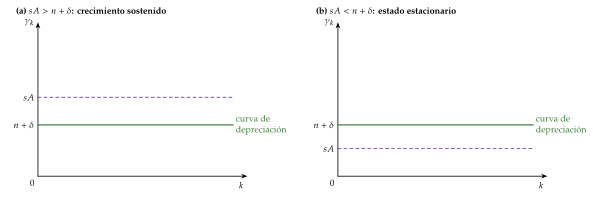
La curva de ahorro, \(s(A+Bk^{\alpha-1})\), decrece con \(k\), como en Solow, pero se acerca a la asíntota sin llegar a cortarla (gráfico 11).
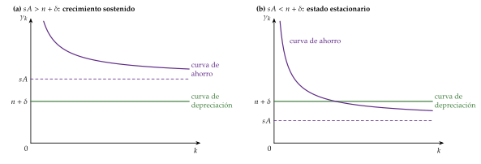
La dinámica depende de la posición de la asíntota (gráfico 12):
si \(sA>n+\delta\), la curva de ahorro queda siempre por encima de la de depreciación: la economía crece siempre, cada vez más despacio, y a largo plazo a la tasa \(sA-(n+\delta)\), como en el \(AK\);
si \(sA<n+\delta\), las curvas se cortan: hay un estado estacionario estable, como en Solow, y la renta por habitante deja de crecer.
Con hogares de Ramsey se llega a lo mismo: el tipo de interés, \(r=f'(k)-\delta\), cae a medida que se acumula capital, pero tiende a \(A-\delta\), no a cero. Si \(A-\delta>\rho\), el consumo crece siempre, cada vez más despacio, y a largo plazo a la tasa del \(AK\), \((A-\delta-\rho)/\theta\) (L. E. Jones y Manuelli, 1990).
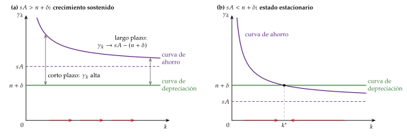
iii) Implicaciones
Crecimiento endógeno y convergencia condicional a la vez: entre economías con los mismos parámetros, la que tiene menos capital crece más deprisa, porque su producto medio del capital es mayor; pero ninguna deja de crecer. La convergencia es en tasas de crecimiento, no hacia un nivel de renta.
La condición clave es que se incumpla la condición de Inada en el infinito, \(f'(\infty)=0\). Es la lección de la tabla 1: todos los modelos del bloque levantan esa condición, y todos salvo el Sobelow levantan además los productos marginales decrecientes. El Sobelow los mantiene y crece igual: los rendimientos no decrecientes son una condición suficiente, no necesaria, para crecer sin progreso técnico exógeno (L. E. Jones y Manuelli, 1990).
Como en el \(AK\), la política que sube \(s\) o \(A\) sube el crecimiento a largo plazo.
c) Extensiones: la función CES con elasticidad de sustitución mayor que 1
La función de producción con elasticidad de sustitución constante (CES) [ver tema 3.A.11], por trabajador y con rendimientos constantes, \[y=f(k)=A\left[a_K\,k^{\frac{\sigma-1}{\sigma}}+a_L\right]^{\frac{\sigma}{\sigma-1}},\qquad a_K+a_L=1,\] donde \(\sigma\) es la elasticidad de sustitución entre capital y trabajo, se comporta como el Sobelow si \(\sigma>1\). Entonces el producto medio del capital tiende a una constante positiva: \[\lim_{k\to\infty}\frac{f(k)}{k}=\lim_{k\to\infty}A\left[a_K+a_L\,k^{-\frac{\sigma-1}{\sigma}}\right]^{\frac{\sigma}{\sigma-1}}=A\,a_K^{\frac{\sigma}{\sigma-1}}>0.\]
Si \(s\,A\,a_K^{\sigma/(\sigma-1)}>n+\delta\), la economía crece sin límite: con mucha sustitución, el capital puede hacer el trabajo de los trabajadores que faltan y su rendimiento no se hunde (Barro y Sala-i-Martin, 2004, cap. 1, fig. 1.14)9.
Evidencia: la mayoría de las estimaciones sitúan la elasticidad de sustitución entre capital y trabajo por debajo de 1 [ver tema 3.A.11], lo que resta realismo a esta vía.
d) Valoración
Reconcilia el crecimiento endógeno con la convergencia condicional, pero con un supuesto difícil de contrastar, el comportamiento del producto marginal cuando el capital tiende a infinito, y, como el \(AK\), con una participación del capital que tiende a 1. Y, como los demás modelos del bloque, no explica el progreso técnico: para que el crecimiento sea sostenido hace falta algo que no se agote con quien lo usa ni muera con quien lo tiene, las ideas.
I.3. Valoración de los modelos de primera generación
Lo que comparten: todos tienen alguna forma de capital amplio cuyo producto marginal no cae a cero (en el Sobelow, los rendimientos decrecientes existen, pero se agotan). Esconden una tecnología \(AK\), y con ella un rendimiento \(r\) que no cae en la ecuación de Euler.
Lo que consiguen: crecimiento sostenido sin progreso técnico exógeno y un papel permanente para la política económica: el ahorro, los impuestos, el gasto público productivo, la subvención de la inversión y la educación cambian la tasa de crecimiento, no solo el nivel de la renta.
Lo que no consiguen:
explicar el progreso técnico: o no existe (\(AK\), Sobelow, Uzawa y Lucas), o es un subproducto no buscado de invertir (externalidades). Salvo, quizá, en la educación, nadie busca mejorar la tecnología;
evitar el filo de la navaja: el crecimiento exige rendimientos exactamente constantes en algún factor acumulable;
ajustarse a la evidencia: no predicen la convergencia condicional que se observa (salvo el Sobelow, y las externalidades con \(\alpha+\eta<1\), que son el modelo de Solow), y las tasas de inversión han subido sin que suba el crecimiento (C. I. Jones, 1995b).
La pregunta que dejan: ¿pueden durar para siempre unos impulsos que nacen solo de acumular capital? Probablemente no: externalidades, gasto público o educación acabarían chocando, tarde o temprano, con los rendimientos decrecientes.
Recapitulación y nexo: la pieza que falta es la actividad deliberada con la que se crean las ideas, la I+D de las empresas. Para incorporarla hay que abandonar la competencia perfecta: es el segundo bloque.
II. Modelos de innovación tecnológica (2.ª generación): competencia imperfecta y progreso técnico endógeno
En el cante (9′): la idea (1′30″), con «no rival + excluible \(\Rightarrow\) rendimientos crecientes \(\Rightarrow\) competencia imperfecta»; Romer (3′30″), con los 3 sectores (gráfico 13), las ecuaciones (12) y (13), «a hombros de gigantes», la versión con ahorro constante, (14), y, con hogares, \(r=\alpha\eta_IL_Y\), \(\gamma^{\mathrm E}\) frente a \(\gamma^{\mathrm P}\) y las 2 distorsiones; la caja de Grossman y Helpman, en una frase; Aghion y Howitt (3′), con el arbitraje (gráficos 14 y 15), \(\gamma=\lambda_IL_I^*\ln\gamma_q\), «rey muerto, rey puesto», los efectos de signo contrario sobre la eficiencia, la U invertida y la distancia a la frontera dichas; la valoración (1′), con la tabla 4 dicha en 2 frases. Las derivaciones están en los anexos C y D.
Conclusión anticipada: cuando el crecimiento se debe a ideas creadas a propósito, hace falta competencia imperfecta para pagarlas, y el mercado no crea las ideas que convienen a la sociedad: la política de innovación puede cambiar la tasa de crecimiento.
Nexo: una vez visto que la acumulación de capital no explica el progreso técnico, pasamos a los modelos en que el progreso técnico es el resultado de una inversión deliberada, la I+D.
II.1. Idea
La segunda salida: asumir competencia imperfecta. Como explicábamos en la introducción, es el otro camino para que la renta por habitante crezca sin factores exógenos.
3 premisas (Romer, 1990):
el progreso técnico es el motor del crecimiento;
es el resultado de decisiones deliberadas de empresas que buscan beneficios, la I+D;
las ideas son distintas de los demás bienes: una vez creadas, pueden usarse una y otra vez sin coste adicional. Son no rivales y, gracias a las patentes o al secreto, parcialmente excluibles.
Por qué no basta la competencia perfecta: si la producción depende de factores rivales (\(K\), \(L\)) y de las ideas (\(N\)), duplicar fábricas y trabajadores con las mismas ideas duplica la producción, por el principio de réplica [ver tema 3.A.11]. Hay entonces rendimientos crecientes en todos los factores juntos: \[F(\kappa K,\kappa L,\kappa N)>\kappa\,F(K,L,N)\qquad\text{para }\kappa>1.\]
Por el teorema de Euler, pagar al capital y al trabajo su producto marginal agota toda la producción: no queda nada para pagar a quien crea las ideas.
Dicho de otro modo, inventar tiene un coste fijo y reproducir el invento, un coste marginal casi nulo: con el precio igual al coste marginal, nadie recuperaría el coste del invento.
Hace falta poder de mercado, el que dan las patentes, o una subvención. Es el precio que se paga por la innovación: un monopolio temporal que sacrifica eficiencia estática (Arrow, 1962a) [ver tema 3.A.15].
2 familias de modelos, según lo que hace una innovación:
el aumento del número de variedades (innovación horizontal): un invento añade un bien intermedio nuevo que no desplaza a los anteriores (Romer, 1990) (Grossman y Helpman, 1991a, cap. 3);
las mejoras de calidad (innovación vertical): un invento mejora un bien que ya existe y deja obsoleto el anterior, la destrucción creativa de Schumpeter10 (Aghion y Howitt, 1992; Grossman y Helpman, 1991b).
II.2. Modelos
II.2.1. Aumento del número de variedades (Romer, 1990)
a) Idea
La pregunta: ¿cómo genera crecimiento sostenido la invención de nuevos bienes intermedios? En Romer (1990), el progreso técnico es un aumento del número de variedades de bienes intermedios: lo que distingue la agricultura de un país rico no es que use más azadas, sino que, además, usa tractores, fertilizantes y semillas mejoradas.
La preferencia por la variedad, aplicada a la producción: el agregador de los bienes intermedios es la función CES de Dixit y Stiglitz [ver tema 3.A.18]. Con más variedades, cada una se usa en menor cantidad y rinde más, y la producción no tiene rendimientos decrecientes en el número de variedades: con variedades de bienes intermedios, la preferencia por la variedad se convierte en rendimientos crecientes.
b) Modelo
i) Supuestos
3 sectores (gráfico 13):
bien final, en competencia perfecta, con trabajo \(L_Y\) y \(N_t\) variedades de bienes intermedios \(x_j\): \[Y_t=L_Y^{1-\alpha}\sum_{j=1}^{N_t}x_{j}^{\alpha},\qquad 0<\alpha<1;\tag{12}\]
bienes intermedios: cada variedad la produce, en monopolio, la empresa que tiene su patente, perpetua. Son bienes de capital: producir una unidad de \(x_j\) exige una unidad de capital, de modo que el capital de la economía es \(K_t=\sum_jx_{j,t}\), y el coste marginal es el coste de uso del capital, \(r+\delta\);
I+D, con libre entrada: con \(L_I\) investigadores se crean nuevas variedades al ritmo \[\dot N_t=\eta_I\,L_I\,N_t,\tag{13}\] donde \(\eta_I\) es la productividad de la investigación11. Las ideas ya inventadas, \(N_t\), hacen más productivos a los investigadores, porque son no rivales y se desbordan: es el motor del crecimiento. «A hombros de gigantes», como escribió Newton: cada investigador ve más lejos porque se apoya en todo lo ya inventado.
Trabajo: población constante, que se reparte entre la producción y la investigación, \(L=L_Y+L_I\), con el mismo salario, \(w\).
Ahorro y reparto del trabajo: en la versión que se desarrolla, como en Solow, los hogares ahorran una fracción constante, \(s\), de la producción, con la que se acumula capital, \(\dot K_t=sY_t-\delta K_t\), y una fracción constante de la población, \(s_I\equiv L_I/L\), se dedica a investigar (C. I. Jones, 2002, cap. 5). Con hogares de Ramsey que eligen cuánto ahorrar y un mercado que decide cuántos investigan, se llega a los mismos resultados (se ve después).
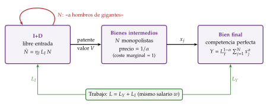
Fuente: elaboración propia a partir de Romer (1990) y Barro y Sala-i-Martin (2004, cap. 6).
ii) Desarrollo
Simetría: todas las variedades entran igual en la producción y tienen el mismo coste, así que se usa la misma cantidad de cada una, \(x=K/N\). Sustituyendo en (12): \[Y_t=L_Y^{1-\alpha}\,N_t\left(\frac{K_t}{N_t}\right)^{\alpha}=K_t^{\alpha}\,(N_tL_Y)^{1-\alpha}.\] Es la función del modelo de Solow con progreso técnico aumentador del trabajo, con una diferencia: el número de variedades, \(N_t\), hace el papel de la tecnología, y ahora sale del modelo [ver tema 3.A.43].
Las ideas: de (13), las variedades crecen a una tasa constante, \(\gamma_N=\eta_I\,L_I=\eta_I\,s_I\,L\).
El capital: por unidad de trabajo eficiente, \(\tilde k\equiv K/(NL_Y)\) e \(\tilde y\equiv Y/(NL_Y)=\tilde k^{\alpha}\), la ley de movimiento es la de Solow con progreso técnico a la tasa \(\gamma_N\): \[\frac{\dot{\tilde k}_t}{\tilde k_t}=s\,\tilde k_t^{\alpha-1}-(\delta+\gamma_N).\] La economía converge a un \(\tilde k^*\) constante y, en la senda de crecimiento equilibrado, la producción, el capital y el consumo por habitante crecen como las variedades: \[\gamma_y=\gamma_k=\gamma_c=\gamma_N=\eta_I\,s_I\,L.\tag{14}\]
Qué cambia respecto a Solow: la tasa de ahorro, \(s\), solo cambia el nivel de la senda, pero la fracción de la población que investiga, \(s_I\), cambia su tasa de crecimiento, y para siempre; y la tasa crece con el tamaño de la población, \(L\): es el efecto escala.
Con el mercado y hogares de Ramsey, \(s\) y \(s_I\) salen del modelo. Se resuelve hacia atrás [ver tema 3.A.14]: primero, cuánto se produce de cada variedad y a qué precio, con las variedades que existen; después, si conviene inventar una nueva. En el anexo C, como en Barro y Sala-i-Martin (2004, cap. 6), el coste marginal de los intermedios se normaliza a 1 unidad de bien final.
Bien final: la empresa compra cada variedad hasta que su producto marginal iguala su precio, \(p_j=\alpha L_Y^{1-\alpha}x_j^{\alpha-1}\), una demanda con elasticidad constante, \(1/(1-\alpha)\): la elasticidad de sustitución de Dixit y Stiglitz, \(\sigma=1/(1-\alpha)\).
Bienes intermedios: el monopolista fija el precio con el margen de la competencia monopolística, \(\sigma/(\sigma-1)=1/\alpha\), sobre su coste marginal: \(p=1/\alpha\), igual para todas las variedades [ver tema 3.A.18]. Vende \(x=\alpha^{2/(1-\alpha)}L_Y\) y gana en cada periodo \(B_j=\frac{1-\alpha}{\alpha}\,\alpha^{2/(1-\alpha)}\,L_Y\).
I+D: una patente vale el valor actual de sus beneficios, \(V=B_j/r\). Con libre entrada, un investigador, que crea \(\eta_IN\) patentes por periodo, cobra lo mismo que en la producción: \(\eta_INV=w\). De ahí sale el tipo de interés, \(r=\alpha\,\eta_I\,L_Y\).
Equilibrio: la producción y el consumo crecen como las variedades, \(\gamma=\eta_IL_I=\eta_I(L-L_Y)\), como en (14), y los hogares siguen la ecuación de Euler (1). Despejando: \[\gamma^{\mathrm E}=\frac{\alpha\,\eta_I\,L-\rho}{\alpha+\theta}.\tag{15}\]
El planificador elige la cantidad de cada intermedio sin margen (\(x=\alpha^{1/(1-\alpha)}L_Y\), más que el monopolista) y tiene en cuenta que cada idea hace más productiva la investigación futura: \[\gamma^{\mathrm P}=\frac{\eta_I\,L-\rho}{\theta}\quad>\quad\gamma^{\mathrm E}.\]
iii) Implicaciones
Crecimiento endógeno por la innovación: la tasa de crecimiento es positiva y constante; sube con la productividad de la investigación, \(\eta_I\), y con la fracción de la población que investiga (con hogares, con la paciencia, y baja con \(\theta\)). La tasa de largo plazo no depende del nivel de renta: no hay convergencia en tasas; solo la transición del capital por unidad eficiente, como en Solow.
Efecto escala: sube con el tamaño de la población, \(L\). Un país (o un mundo) con más personas tiene más investigadores y, como las ideas son no rivales, cada una sirve a todos. Si la población creciera, el crecimiento se aceleraría sin límite; por eso el modelo supone \(L\) constante, y por eso la evidencia lo cuestiona (bloque III).
El mercado crece menos de lo que conviene, por 2 distorsiones:
estática: el margen de monopolio hace que se usen pocos bienes intermedios;
dinámica: el inventor solo cobra los beneficios de su patente, no todo el excedente que crea, y no tiene en cuenta que su idea hace más productiva la investigación futura.
Política: con 2 distorsiones hacen falta 2 instrumentos. Una subvención a la compra de bienes intermedios igual al margen, de tipo \(1-\alpha\), corrige la estática; para la dinámica hacen falta, además, subvenciones a la I+D (Barro y Sala-i-Martin, 2004, cap. 6). Con un solo instrumento se llega, como mucho, a un segundo óptimo, y si se financian con impuestos distorsionantes hay que restar su coste.
Patentes: sin ellas no habría I+D, porque no se podrían cobrar los beneficios; pero el monopolio que crean es la distorsión estática. Es el dilema entre eficiencia estática y dinámica (apartado III.3).
Trampa de estancamiento: si la economía es demasiado pequeña (\(\alpha\eta_IL<\rho\) con hogares), a nadie le compensa investigar y no hay crecimiento. Romer (1990, S95-96) lo propone como explicación de países con crecimiento por habitante casi nulo. Y subvencionar el capital físico no basta: aquí la inversión no arrastra al conocimiento, y lo que hace falta es que se dedique más capital humano a investigar (Romer, 1990, S94).
Apertura e instituciones: integrar 2 economías iguales que intercambian bienes e ideas equivale a duplicar \(L\) y evita inventar 2 veces lo mismo: sube la tasa de crecimiento de las 2 (Rivera-Batiz y Romer, 1991). Las instituciones que protegen la propiedad, también la intelectual, favorecen la innovación12.
c) Extensiones
Versión de laboratorio: si la I+D usa bien final en lugar de investigadores, el modelo es un \(AK\) en las ideas, que mantiene el efecto escala (un \(L\) mayor sube la tasa de crecimiento); la única distorsión es el margen, y basta un instrumento (Barro y Sala-i-Martin, 2004, cap. 6).
Economía abierta: Grossman y Helpman (1991a) estudian cómo el comercio y la política comercial afectan al crecimiento a través del coste de la I+D.
Comercio, política comercial e innovación (Grossman y Helpman, 1991a). Si la I+D usa sobre todo un factor (el trabajo cualificado o el capital humano), todo lo que encarezca ese factor encarece la investigación y frena el crecimiento. La política comercial lo hace a través de los precios de los factores, por el teorema de Stolper-Samuelson: el aumento del precio de un bien sube la remuneración del factor que usa intensivamente [ver tema 3.B.5].
En un país que exporta bienes intensivos en trabajo cualificado e importa bienes intensivos en trabajo no cualificado, un arancel sube el precio relativo de lo que importa y, con él, el salario del trabajo no cualificado, y baja el del cualificado: la I+D se abarata y el crecimiento aumenta.
En un país que importa bienes intensivos en trabajo cualificado, el mismo arancel encarece el factor que usa la I+D, y el crecimiento cae: le conviene la apertura.
Además, la apertura afecta a la difusión de las ideas, al tamaño del mercado y a la competencia. El modelo da efectos sobre el crecimiento, no sobre el bienestar. El tema de referencia de estos canales es [ver tema 3.B.9].
d) Evidencia empírica
El rendimiento social de la I+D es muy superior al privado: según C. I. Jones y Williams (1998), la inversión óptima en I+D de Estados Unidos sería de 2 a 4 veces la observada, lo que confirma que el mercado investiga de menos.
Las nuevas variedades importadas aumentan el bienestar de forma medible (Broda y Weinstein, 2006).
El efecto escala choca con los datos (apartado III.1).
e) Valoración
A favor: es el primer modelo en el que el progreso técnico es una inversión deliberada, con su forma de financiarse (el monopolio) y sus fallos de mercado; une la competencia monopolística y el crecimiento y da el marco de la política de innovación.
En contra: el efecto escala; la producción de ideas lineal en las ideas ya inventadas, otro filo de la navaja (con un exponente menor que 1 el crecimiento se agota); y los inventos no dejan obsoletos a los anteriores: no hay competencia entre innovadores ni empresas que pierdan.
Nexo: la destrucción de lo viejo por lo nuevo es lo que añaden Aghion y Howitt.
II.2.2. Mejoras de calidad: el modelo schumpeteriano (Aghion y Howitt, 1992)
a) Idea
La pregunta: ¿cómo genera crecimiento la destrucción creativa? Aquí, progresar es mejorar la calidad de lo que ya existe (del carruaje al automóvil, del teléfono fijo al móvil), y cada mejora deja obsoleta la anterior. El innovador obtiene un monopolio temporal, hasta que otro lo desbanca: «rey muerto, rey puesto».
Aghion y Howitt (1992) ponen ecuaciones a la idea de Schumpeter. Lo nuevo frente a Romer: el crecimiento tiene ganadores y perdedores, y la innovación de hoy destruye las rentas de la de ayer.
b) Modelo
i) Supuestos
Bien final, en competencia, producido con un único bien intermedio de calidad \(A_t\): \(y_t=A_t\,x_t^{\alpha}\), con \(0<\alpha<1\).
Bien intermedio: lo produce en monopolio el último innovador, con una unidad de trabajo por unidad.
Investigación: con \(L_I\) investigadores, las innovaciones llegan según un proceso de Poisson de tasa \(\lambda_IL_I\); cada una multiplica la calidad por \(\gamma_q>1\) (una escalera de calidades) y da al innovador el monopolio hasta la siguiente13. El monopolista en ejercicio no investiga: ganaría menos que un recién llegado, porque destruiría su propia renta (el efecto reemplazo de Arrow (1962a)) [ver tema 3.A.17].
Trabajo: \(L=x+L_I\), con el mismo salario en la producción y en la investigación. Hogares neutrales al riesgo, con utilidad lineal: \(r=\rho\).
ii) Desarrollo
Beneficio del monopolista: igualando el ingreso marginal al salario, produce una cantidad que solo depende del salario relativo a la calidad, \(\omega\equiv w/A\) (local), y gana \(B_{t}=A_t\,\frac{1-\alpha}{\alpha}\,\omega\,x\) (anexo D).
Valor de una innovación: el beneficio dura hasta que llega la siguiente, a la tasa \(\lambda_IL_I\), que hace las veces de una depreciación (la obsolescencia): \[V_{t+1}=\frac{B_{t+1}}{r+\lambda_I\,L_I}.\]
Arbitraje: una hora de trabajo rinde lo mismo en la fábrica que en el laboratorio, \(w_t=\lambda_IV_{t+1}\). En el estado estacionario, con \(B_{t+1}\) proporcional a \(\gamma_qA_t\): \[1=\lambda_I\,\gamma_q\,\frac{1-\alpha}{\alpha}\;\frac{L-L_I}{\rho+\lambda_I\,L_I}.\tag{16}\] El lado derecho, el rendimiento esperado de investigar en relación con su coste, decrece con \(L_I\) por 2 vías: quedan menos trabajadores en la producción (menos beneficio) y hay más destrucción creativa (monopolios más cortos). Su corte con el 1, el coste de oportunidad de investigar (el salario), da la investigación de equilibrio, \(L_I^*\). Si mejora la productividad de la investigación, \(\lambda_I\), o el tamaño de cada salto de calidad, \(\gamma_q\), la curva se desplaza hacia arriba y \(L_I^*\) aumenta (gráfico 14).
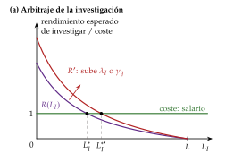
Fuente: elaboración propia a partir de Aghion y Howitt (1992, fig. 1) y Aghion y Howitt (2009, cap. 4).
Crecimiento: el logaritmo de la producción sube \(\ln\gamma_q\) con cada innovación, y las innovaciones llegan, en media, \(\lambda_IL_I^*\) veces por periodo: \[\gamma=\lambda_I\,L_I^*\,\ln\gamma_q,\qquad L_I^*=\frac{\gamma_q\frac{1-\alpha}{\alpha}L-\frac{\rho}{\lambda_I}}{1+\gamma_q\frac{1-\alpha}{\alpha}}.\tag{17}\] El crecimiento es aleatorio, a saltos: la calidad sube un escalón con cada innovación, en momentos que nadie conoce de antemano, y su media a largo plazo resulta de multiplicar cuántas innovaciones llegan por lo que mejora cada una (gráfico 15, derecha).
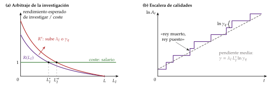
Fuente: elaboración propia a partir de Aghion y Howitt (1992, fig. 1) y Aghion y Howitt (2009, cap. 4).
iii) Implicaciones
Determinantes: el crecimiento sube con la productividad de la investigación (\(\lambda_I\)), con el tamaño de las innovaciones (\(\gamma_q\)), con la población (\(L\): también hay efecto escala) y con la paciencia. Y baja con la competencia: un \(\alpha\) mayor (bienes más sustituibles, menos poder de mercado) reduce el margen, el premio de innovar y el crecimiento. Es el efecto schumpeteriano: las rentas de monopolio son el premio de la innovación.
El mercado puede innovar de menos o de más, porque hay efectos de signo contrario:
de menos: el innovador no cobra lo que su idea aporta a las innovaciones futuras, que se construyen sobre ella (efecto intertemporal), ni todo el excedente que crea, por el margen (efecto apropiabilidad);
de más: le quita la renta al monopolista anterior, una transferencia que para él es ganancia y para la sociedad no (efecto robo de negocio).
Por eso la recomendación de subvencionar la I+D no es inmediata, como en Romer: depende de qué efecto domine.
Economía política: el crecimiento destruye rentas, y quienes las pierden (empresas establecidas, sus trabajadores) tienen incentivos para frenarlo con barreras a la entrada y presión sobre los Gobiernos. La defensa de la competencia y la regulación de los grupos de presión forman parte de la política de crecimiento [ver tema 3.A.20] [ver tema 4.A.15].
c) Extensiones
Competencia e innovación en U invertida (Aghion et al., 2005): si las empresas compiten paso a paso y las rezagadas pueden alcanzar a las líderes, la competencia tiene 2 efectos: el schumpeteriano, que desanima a las rezagadas, y el de escapar de la competencia, que anima a innovar a las que van igualadas para despegarse. Con poca competencia domina el segundo; con mucha, el primero. La relación entre competencia e innovación tiene forma de U invertida [ver tema 3.A.17].
Distancia a la frontera (Acemoglu, Aghion y Zilibotti, 2006): lejos de la frontera tecnológica, crecer imitando es eficaz y convienen unas instituciones (grandes empresas, crédito bancario, relaciones a largo plazo); cerca de ella hay que innovar, y convienen otras (competencia, entrada, mercados de capitales, universidades). Un país que no cambia de instituciones a tiempo deja de converger [ver tema 3.B.28].
Escalera de calidades con variedades: Grossman y Helpman (1991b) dan la versión de calidades con muchos sectores, la base de los modelos de comercio y crecimiento [ver tema 3.B.9].
La dirección del cambio técnico: con 2 tipos de tecnologías, la innovación se dirige a la más rentable, y la política puede orientarla, por ejemplo hacia las tecnologías limpias (Acemoglu et al., 2012) [ver tema 3.B.31].
Las condiciones del crecimiento sostenido (Mokyr, 2002): el otro premiado de 2025 explica con la historia de la Revolución Industrial por qué la innovación se volvió continua: hizo falta que el conocimiento proposicional (saber por qué funcionan las cosas, la ciencia) y el prescriptivo (saber cómo hacerlas, las técnicas) se alimentaran el uno al otro, y una sociedad abierta al cambio, que no dejara bloquearlo a los perdedores de la destrucción creativa.
d) Evidencia empírica
Aghion et al. (2005) encuentran la U invertida entre la competencia y las patentes en las industrias del Reino Unido.
La destrucción creativa existe, pero no es la fuente principal del crecimiento: con datos de todas las empresas no agrarias de Estados Unidos, Garcia-Macia, Hsieh y Klenow (2019) concluyen que la mayor parte viene de empresas establecidas que mejoran sus propios productos.
La trampa de la renta media (Gill y Kharas, 2007), en la que muchos países se estancan tras agotar el crecimiento por imitación, es coherente con la distancia a la frontera [ver tema 3.B.28].
e) Valoración
A favor: incorpora la obsolescencia, une la organización industrial y el crecimiento (competencia, entrada, patentes), explica la economía política del crecimiento y da predicciones contrastables con datos de empresas.
En contra: mantiene el efecto escala, y sus conclusiones de bienestar son ambiguas, lo que dificulta convertirlo en recomendaciones; la evidencia matiza, además, el peso de la destrucción creativa frente a la mejora de los propios productos.
II.3. Valoración de los modelos de segunda generación
Lo que consiguen: hacen del progreso técnico el resultado de decisiones de empresas, explican cómo se financia (las rentas de monopolio) y por qué el mercado no innova lo que conviene, y dan el marco de la política de innovación: patentes, I+D, competencia y apertura.
Variedades y calidades no son rivales entre sí: en la realidad conviven la innovación horizontal y la vertical (tabla 3).
Lo que comparten con los de 1.ª generación: un filo de la navaja, ahora en la producción de ideas, lineal en las ideas ya inventadas, y su consecuencia: el efecto escala, más población, más crecimiento.
La tabla 4 resume todos los modelos de la exposición.
| Romer (1990) | Aghion y Howitt (1992) | |
|---|---|---|
| Qué es una innovación | Un bien intermedio nuevo | Un bien mejor que sustituye al anterior |
| Quién pierde | Nadie: las variedades se suman | El monopolista anterior (destrucción creativa) |
| ¿Demasiada o poca I+D? | Poca: 2 distorsiones | Ambiguo: robo de negocio frente a apropiabilidad |
| Efecto de la competencia | Menos margen, menos I+D (con precio límite)\(^{a}\) | U invertida (con competencia paso a paso) |
| Efecto escala | Sí | Sí |
\(^{a}\) Con el monopolista limitado por un competidor (precio límite) (Acemoglu, 2009, 443). En la versión del apartado II.2.1, \(\alpha\) mide a la vez el margen y la participación de los intermedios, y \(\partial\gamma^{\mathrm E}/\partial\alpha=(\theta\eta_IL+\rho)/(\alpha+\theta)^2>0\): el efecto no se puede leer solo como competencia. Fuente: elaboración propia a partir de Aghion y Howitt (2009) y Acemoglu (2009).
| Modelo | Motor | \(r\) que no cae | \(\gamma\) a largo plazo | Convergencia | ¿Equilibrio óptimo? |
|---|---|---|---|---|---|
| Solow [ver tema 3.A.43] | Progreso técnico exógeno | Cae hasta \(\rho+\theta g\) | \(g\) | Condicional | Sí (RCK) |
| \(AK\) (Rebelo, 1991) | Capital amplio, \(Y=AK\) | \(A-\delta\) | \((A-\delta-\rho)/\theta\); \(sA-(n+\delta)\) | No | Sí |
| Barro (1990) | Gasto público productivo | \((1-\tau)\alpha A^{\frac1\alpha}\tau^{\frac{1-\alpha}{\alpha}}-\delta\) | (5); máximo en \(\tau^*=1-\alpha\) | No | No (impuesto sobre la renta) |
| Externalidades (Arrow, 1962b; Romer, 1986) | Aprendizaje y desbordamientos | \(\alpha AL^{1-\alpha}-\delta\) (\(<AL^{1-\alpha}-\delta\) social) | \((\alpha AL^{1-\alpha}-\delta-\rho)/\theta\) | No, con \(\alpha+\eta=1\) | No: subinversión |
| Uzawa-Lucas | Capital humano | \(B-\delta_H\) | \((B-\delta_H-\rho)/\theta\) | No en niveles; transición en \(k/h\) | Sí; no con \(\eta>0\) |
| Sobelow (Jones y Manuelli, 1990) | \(f'(k)\to A>0\) | Tiende a \(A-\delta\) | \(sA-(n+\delta)\) | Condicional, en tasas | — |
| Romer (1990) | Nuevas variedades (I+D) | \(\alpha\eta_IL_Y\) | \((\alpha\eta_IL-\rho)/(\alpha+\theta)\) | No | No: crece de menos |
| Aghion-Howitt (1992) | Mejoras de calidad (I+D) | \(\rho\) (hogares neutrales) | \(\lambda_IL_I^*\ln\gamma_q\) | No | Ambiguo |
| Jones (1995) (III.2) | Ideas con rendimientos decrecientes | — | \(\lambda n/(1-\phi)\) | Condicional | No |
Fuente: elaboración propia a partir de los bloques I a III.
Recapitulación y nexo: los datos no muestran el efecto escala. El último bloque estudia qué queda de los rendimientos crecientes de las ideas cuando se corrige.
III. Rendimientos crecientes y efecto escala: el crecimiento semiendógeno
En el cante (6′): la idea (1′), de palabra, con el gráfico 16 como apoyo; Jones (2′30″), con la ecuación (18), la función clave (19) y el gráfico construido paso a paso (gráficos 17 a 19); la evidencia y la política (2′30″), de palabra.
Conclusión anticipada: los rendimientos crecientes que importan para el crecimiento son los de las ideas, por su no rivalidad. Implican que más investigadores dan más crecimiento, pero los datos dicen que las ideas son cada vez más difíciles de encontrar: el crecimiento a largo plazo depende entonces de cuántas personas se dedican a buscarlas, y la política cambia sobre todo el nivel de la renta, lo que no la hace menos importante.
Nexo: tras ver cómo los modelos de innovación explican el crecimiento, pasamos a lo que tienen en común, la no rivalidad, a su prueba empírica y a lo que implica para la política.
III.1. Idea: la no rivalidad de las ideas y el efecto escala
De dónde salen los rendimientos crecientes: un objeto (una máquina, una hora de trabajo) solo lo puede usar uno a la vez; una idea (un diseño, una fórmula, un programa) la pueden usar a la vez todas las empresas y todos los países. Si la producción tiene rendimientos constantes en los factores rivales, los tiene crecientes en los factores rivales y las ideas juntos (apartado II.1) (Romer, 1990; C. I. Jones, 2005).
El efecto escala: la renta por habitante depende de las ideas totales, no de las ideas por persona, porque cada idea sirve a todos. Más personas son más investigadores, más ideas y más renta para cada uno. En los modelos de Romer y de Aghion y Howitt, y en el de externalidades con el capital agregado (apartado I.2.3), el tamaño de la población sube la tasa de crecimiento.
A muy largo plazo, los datos lo apoyan (Kremer, 1993): hasta la transición demográfica, la tasa de crecimiento de la población mundial aumentó con su tamaño, como si más personas generaran más ideas que permitían alimentar a más personas14.
En la posguerra, no: en Estados Unidos, el número de investigadores se ha duplicado desde 1991 y el gasto real en I+D se ha multiplicado casi por 5 desde 1981, pero el crecimiento de la productividad total de los factores (PTF) no se ha acelerado: rondaba el 2 % anual en los 50 y los 60 y desde 1970 ha crecido, de media, un 0,9 % (gráfico 16) (Fernald, 2026; OCDE, 2026). Es el mismo tipo de evidencia, con datos de 1950-1988, con el que C. I. Jones (1995a) rechaza el efecto escala de los modelos de I+D.
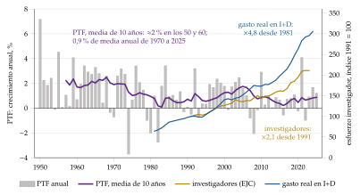
III.2. El modelo de Jones (1995)
a) Idea
Si el esfuerzo investigador crece y el crecimiento no, la producción de ideas no puede ser lineal en las ideas ya descubiertas, como en Romer. C. I. Jones (1995a) propone que tenga rendimientos decrecientes: cada idea nueva eleva el conocimiento en un porcentaje cada vez menor.
b) Modelo
i) Supuestos
Los de Romer salvo uno: la producción de ideas \[\dot N_t=\eta_I\,L_{I,t}^{\lambda}\,N_t^{\phi},\qquad 0<\lambda\leq1,\ \ \phi<1,\tag{18}\] con \(\lambda\) y \(\phi\) locales15:
\(\lambda<1\) recoge la duplicación de esfuerzos: si se duplican los investigadores, muchos buscan lo mismo y las ideas no se duplican;
\(\phi\) mide cómo influyen las ideas pasadas en las nuevas: si \(\phi>0\), ayudan («a hombros de gigantes»); si \(\phi<0\), las fáciles ya se han encontrado (fishing out). Lo que importa es \(\phi<1\), que incluye desbordamientos positivos (\(0<\phi<1\)): cada idea eleva el conocimiento en un porcentaje cada vez menor (C. I. Jones, 1995a, 765 y 768). Romer es el caso límite \(\lambda=\phi=1\).
La población, y con ella el número de investigadores, crece a la tasa \(n\), con una fracción constante de la población dedicada a la I+D.
ii) Desarrollo
Dividiendo por \(N_t\), \(\gamma_N=\eta_I\,L_I^{\lambda}\,N^{\phi-1}\). Para que sea constante, el numerador y el denominador tienen que crecer igual: \(\lambda\,\gamma_{L_I}=(1-\phi)\,\gamma_N\). Con \(\gamma_{L_I}=n\):
\[\gamma_N=\frac{\lambda\,n}{1-\phi}\tag{19}\]
y la renta por habitante crece en la misma proporción que las ideas. Con \(\lambda=1\), sin duplicación de esfuerzos, queda \(\gamma_N=n/(1-\phi)\).
Gráficamente, el punto de partida es Romer (anexo E): con \(\phi=1\), \(\gamma_N=\eta_IL_I\) no depende de \(N\) y es una horizontal; si sube el número de investigadores, sube para siempre: el efecto escala (gráfico 17).
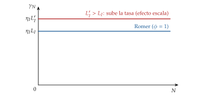
La curva de Jones: con \(\phi<1\), \(\gamma_N\) decrece con \(N\), porque cada idea nueva cuesta más; la economía converge a la senda en que \(\gamma_N=\lambda n/(1-\phi)\) (gráfico 18).
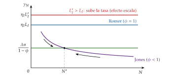
Más investigadores: si sube su número, la curva se desplaza: el crecimiento sube durante un tiempo y vuelve a la misma tasa, con más ideas: un efecto nivel (gráfico 19).
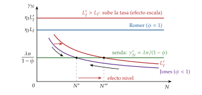
iii) Implicaciones
Sin efecto escala en la tasa: el tamaño de la población eleva el nivel de la renta (hay más ideas), no su tasa de crecimiento, que depende del crecimiento de la población y de los rendimientos de la producción de ideas16.
Por qué «semiendógeno»: la tecnología es endógena, la crean investigadores que buscan beneficios, pero la tasa de crecimiento a largo plazo depende de una variable exógena, \(n\). Sin crecimiento de la población, el crecimiento por habitante se agota.
La política cambia el nivel, no la tasa: subvencionar la I+D aumenta el crecimiento durante mucho tiempo y el nivel de la renta para siempre, pero no la tasa de largo plazo, como el ahorro en el modelo de Solow. Los efectos de nivel pueden ser enormes y la transición, de décadas: no restan importancia a la política.
Convergencia: vuelve la dinámica de transición y, con ella, la convergencia condicional.
c) Extensiones
Los modelos «totalmente endógenos» sin efecto escala (A. Young, 1998; Peretto, 1998): al crecer la economía, la I+D se reparte entre más variedades de productos, y cada una avanza al mismo ritmo. Desaparece el efecto escala y la política vuelve a cambiar la tasa de crecimiento, pero a cambio de otro filo de la navaja: la proliferación de productos tiene que compensar exactamente el aumento de la población.
La inteligencia artificial: si automatiza parte de la producción de ideas, el esfuerzo investigador podría crecer sin que crezca la población (Aghion, Jones y Jones, 2019).
d) Valoración
Concilia los modelos de innovación con los datos sin perder su mecanismo, y es hoy la referencia para hablar de las ideas y el crecimiento (C. I. Jones, 2005, 2022b). Su punto débil es que traslada el motor último del crecimiento a la demografía, que el modelo no explica. La evidencia no ha zanjado el debate con los totalmente endógenos.
III.3. Evidencia empírica e implicaciones de política
Evidencia empírica
Las ideas son cada vez más difíciles de encontrar: desde los años 30, el esfuerzo investigador efectivo de Estados Unidos se ha multiplicado por 23, mientras que la productividad de la investigación ha caído por un factor de 41, un 5 % al año; para mantener la ley de Moore hacen falta hoy más de 18 veces más investigadores que a principios de los 70 (Bloom et al., 2020, 1110). Es lo que predice \(\phi<1\).
El freno de la población: si la población mundial deja de crecer y empieza a caer, como apuntan las tasas de fecundidad, el número de investigadores acabará cayendo y, con \(\phi<1\), el conocimiento y la renta por habitante se estancarían mientras la población se extingue poco a poco, lo que Jones llama el «planeta vacío» (C. I. Jones, 2022a). Según C. I. Jones (2023), el crecimiento del último siglo se ha apoyado en aumentos que tienen un límite, como los de la escolarización y la proporción de la población que investiga.
Educación y externalidades: lo que importa es la calidad de la educación, más que los años, y las externalidades del capital humano estimadas son moderadas (apartado I.2.4).
Convergencia: los datos muestran convergencia condicional, lenta, que encaja con los modelos neoclásicos y semiendógenos, y no con el \(AK\) ni con Romer; la contrastación entre unos y otros y la contabilidad del crecimiento se estudian aparte [ver tema 3.A.45].
Implicaciones de política económica
La idea común: en los modelos neoclásicos la política solo cambia el nivel de la renta; en los endógenos puede cambiar su tasa de crecimiento, y en los semiendógenos, su nivel durante décadas. Y como casi todos tienen fallos de mercado (externalidades, poder de mercado, desbordamientos del conocimiento), el equilibrio no es óptimo y hay margen para intervenir:
I+D: su rendimiento social supera al privado (C. I. Jones y Williams, 1998), lo que justifica apoyarla con subvenciones, incentivos fiscales e investigación básica pública; los incentivos fiscales a la I+D funcionan, al menos a medio plazo (Bloom, Van Reenen y Williams, 2019). Con destrucción creativa, la recomendación depende del peso del robo de negocio. En España, con un gasto del 1,50 % del PIB (gráfico 1), la Ley 17/2022 fija como objetivo que la financiación pública de la I+D alcance el 1,25 % del PIB en 2030 (Jefatura del Estado, 2022) [ver tema 4.A.7];
patentes: sin ellas no se cobraría la innovación; con demasiada protección, se encarece el uso de las ideas y se frena la innovación que se construye sobre otras. La duración y el alcance óptimos equilibran la eficiencia dinámica y la estática (Nordhaus, 1969) [ver tema 3.A.15];
educación: con Uzawa y Lucas, la eficiencia del sistema educativo sube el crecimiento; con Nelson y Phelps, el capital humano acelera la adopción de tecnologías; la evidencia apunta a la calidad más que a los años [ver tema 3.A.25];
competencia: en el modelo básico de Aghion y Howitt reduce la innovación; con la U invertida, la aumenta allí donde las empresas compiten de cerca, y cerca de la frontera tecnológica la entrada empuja a innovar a las establecidas. La defensa de la competencia es política de crecimiento [ver tema 4.A.15];
apertura: más mercado y más difusión de las ideas, con el matiz de Grossman y Helpman sobre el coste de la I+D [ver tema 3.B.9];
gasto público e impuestos: el tamaño y la composición del gasto y la forma de financiarlo afectan al crecimiento (Barro, Rebelo) [ver tema 3.A.38];
instituciones: la protección de la propiedad, la seguridad jurídica y la apertura al cambio son las condiciones de Mokyr para que la innovación sea continua [ver tema 3.A.45].
Política industrial: el debate no es solo cuánto apoyar la innovación, sino cómo: con instrumentos horizontales, iguales para todos los sectores (incentivos fiscales, educación, competencia), o sectoriales, que eligen ganadores con el riesgo de que los capturen los grupos de presión.
Recapitulación: las ideas no rivales son la fuente de los rendimientos crecientes y del crecimiento sostenido; su efecto escala no se ve en los datos de la posguerra, y la versión semiendógena traslada el peso de la política de la tasa al nivel, sin quitárselo.
Conclusión
Recapitulación:
En conclusión,
los modelos de crecimiento endógeno nacen para explicar el crecimiento a largo plazo sin un progreso técnico exógeno. Los de 1.ª generación lo consiguen, sin explicar el progreso técnico, con una función de producción en la que el capital amplio (físico, público, con externalidades o humano) no tiene rendimientos decrecientes: el rendimiento del ahorro no cae;
los de 2.ª generación, con ideas creadas por empresas que buscan rentas de monopolio, en forma de nuevas variedades (Romer) o de mejores calidades (Aghion y Howitt); en todos, el equilibrio de mercado crece menos de lo que conviene, o no lo que conviene;
las ideas, no rivales, son la fuente de los rendimientos crecientes; su efecto escala no está en los datos, y el crecimiento semiendógeno de Jones lo corrige: la política cambia sobre todo el nivel de la renta, durante décadas.
Relevancia:
Estos modelos son el marco de la política de crecimiento: la de I+D e innovación [ver tema 4.A.7], la defensa de la competencia [ver tema 4.A.15], la política educativa y la discusión europea sobre la brecha de innovación con Estados Unidos.
Y explican por qué una recesión puede tener efectos permanentes sobre el nivel de la renta.
Extensiones:
Estos modelos estudian las causas próximas del crecimiento: la acumulación de capital físico y humano y la innovación. ¿Por qué Corea del Sur y Singapur acumularon e innovaron tras la Segunda Guerra Mundial, mientras Nigeria creció muy poco? Lo explican las causas últimas, las instituciones, la geografía y la cultura, que hacen rentable o no invertir, estudiar e innovar (Acemoglu, 2009, cap. 1) (Acemoglu, Johnson y Robinson, 2001) [ver tema 3.A.45].
La contrastación empírica, la contabilidad del crecimiento y la convergencia [ver tema 3.A.45]; el comercio y el crecimiento [ver tema 3.B.9]; las teorías del desarrollo y la trampa de la renta media [ver tema 3.B.28]; el cambio técnico dirigido y el clima [ver tema 3.B.31].
Opinión:
La evidencia favorece una visión intermedia.
Las ideas son el motor del crecimiento a largo plazo, pero cada vez cuesta más encontrarlas, y el crecimiento futuro depende de que haya cada vez más personas, o máquinas, buscándolas.
Para una economía como la española, por debajo de la media europea en I+D y lejos de la frontera en muchos sectores, la lección es doble: invertir en capital humano y en innovación, y dejar que la competencia y la entrada de empresas hagan su trabajo.
Idea final:
A la pregunta del principio, si una economía puede crecer para siempre sin un progreso técnico caído del cielo, estos modelos responden que sí, pero no acumulando más de lo mismo, sino encendiendo unas ideas en otras, como la vela de Jefferson.
Como escribió Romer (2008), cada generación ha visto los límites que unos recursos finitos impondrían al crecimiento si no se encontraran nuevas recetas e ideas, y cada generación ha subestimado cuántas quedaban por descubrir.
«Más vale maña que fuerza».
A. Anexo: el modelo de Barro (1990) con hogares de Ramsey
Supuestos: los del apartado I.2.2, con hogares de Ramsey con utilidad isoelástica en lugar de una tasa de ahorro constante. Para simplificar, la población es constante y se normaliza a 1, así que los agregados son también por trabajador.
Un \(AK\): con \(G=\tau Y\), \(Y=A\,K^{\alpha}(\tau Y)^{1-\alpha}\), es decir, \(Y=A^{1/\alpha}\,\tau^{(1-\alpha)/\alpha}\,K\).
Rendimiento privado: cada empresa toma \(G\) como dado, y el producto marginal privado del capital es \(\alpha Y/K\). Tras impuestos, el hogar recibe \(r=(1-\tau)\,\alpha\,A^{1/\alpha}\tau^{(1-\alpha)/\alpha}-\delta\), constante. Con la ecuación de Euler (1): \[\gamma=\frac{1}{\theta}\left[\textcolor{tceerojo}{(1-\tau)}\,\alpha\,A^{1/\alpha}\,\textcolor{tceeverde}{\tau^{(1-\alpha)/\alpha}}-\delta-\rho\right].\]
El tipo que maximiza el crecimiento: el tipo entra a través de \((1-\tau)\,\tau^{(1-\alpha)/\alpha}\), como con ahorro constante (5), y el máximo vuelve a estar en \(\tau^*=1-\alpha\), con la regla de Barro, \(\partial Y/\partial G=1\). ∎
Planificador: con \(G/Y=1-\alpha\), la producción neta del gasto es \((1-\tau^*)\,y=\alpha A^{1/\alpha}(1-\alpha)^{(1-\alpha)/\alpha}k\), y el rendimiento social del capital, \(\alpha A^{1/\alpha}(1-\alpha)^{(1-\alpha)/\alpha}\). Crece a \[\gamma^{\mathrm P}=\frac{1}{\theta}\left[\alpha A^{1/\alpha}(1-\alpha)^{(1-\alpha)/\alpha}-\delta-\rho\right].\] El hogar, con el impuesto sobre la renta, recibe \((1-\tau^*)\,\alpha\,y/k\), la fracción \(\alpha\) del rendimiento social: el equilibrio crece menos que el óptimo. Con un impuesto de suma fija que financiara el mismo gasto, recibiría \(\alpha\,y/k\), el rendimiento social, y el equilibrio sería óptimo (Barro y Sala-i-Martin, 2004, § 4.4). ∎
B. Anexo: el modelo de Uzawa y Lucas paso a paso
Sin externalidad (\(\eta=0\))
El problema es el del apartado I.2.4, con descuento \(\rho-n\) porque la utilidad es por persona y la población crece a \(n\), y se resuelve con las condiciones de la caja del hamiltoniano en valor corriente. Con \(y_t\equiv A\,k_t^{\alpha}(u_th_t)^{1-\alpha}\): \[\mathcal H_t=\frac{c_t^{1-\theta}-1}{1-\theta}+\lambda_{K,t}\left[y_t-c_t-(\delta_K+n)\,k_t\right]+\lambda_{H,t}\left[B(1-u_t)\,h_t-(\delta_H+n)\,h_t\right].\] Los coestados son el valor, en utilidad del momento \(t\), de una unidad más de capital físico (\(\lambda_{K,t}\)) y humano (\(\lambda_{H,t}\)).
Condiciones de primer orden: \[\begin{aligned} \frac{\partial\mathcal H_t}{\partial c_t}=0:&\quad c_t^{-\theta}=\lambda_{K,t},\\ \frac{\partial\mathcal H_t}{\partial u_t}=0:&\quad \lambda_{K,t}(1-\alpha)\frac{y_t}{u_t}=\lambda_{H,t}\,B\,h_t,\\ \dot\lambda_{K,t}=(\rho-n)\lambda_{K,t}-\frac{\partial\mathcal H_t}{\partial k_t}:&\quad \frac{\dot\lambda_{K,t}}{\lambda_{K,t}}=\rho+\delta_K-\alpha\frac{y_t}{k_t},\\ \dot\lambda_{H,t}=(\rho-n)\lambda_{H,t}-\frac{\partial\mathcal H_t}{\partial h_t}:&\quad \frac{\dot\lambda_{H,t}}{\lambda_{H,t}}=\rho+\delta_H-B. \end{aligned}\] La última usa la segunda: \[\begin{aligned} \frac{\partial\mathcal H_t}{\partial h_t}&=\lambda_{K,t}(1-\alpha)\frac{y_t}{h_t}+\lambda_{H,t}\left[B(1-u_t)-\delta_H-n\right]\\ &=\lambda_{H,t}Bu_t+\lambda_{H,t}\left[B(1-u_t)-\delta_H-n\right]=\lambda_{H,t}(B-\delta_H-n). \end{aligned}\] Transversalidad: \(\lim_{t\to\infty}e^{-(\rho-n)t}\lambda_{K,t}k_t=\lim_{t\to\infty}e^{-(\rho-n)t}\lambda_{H,t}h_t=0\).
Ecuación de Euler: de la primera, \(\gamma_c=-\frac{1}{\theta}\frac{\dot\lambda_{K,t}}{\lambda_{K,t}}=\frac{1}{\theta}\left(\alpha\frac{y_t}{k_t}-\delta_K-\rho\right)\): el rendimiento del capital físico es \(r=\alpha\,y/k-\delta_K\).
Senda de crecimiento equilibrado (\(u\) constante y tasas constantes):
como \(\gamma_c\) es constante, \(y/k\) también: \(\gamma_y=\gamma_k\); y como \(\gamma_y=\alpha\gamma_k+(1-\alpha)\gamma_h\), también \(\gamma_h=\gamma_k\);
de la acumulación de \(k\), \(c/k=y/k-\delta_K-n-\gamma_k\) es constante: \(\gamma_c=\gamma_k\);
de la condición de \(u\), con \(u\) constante, \(\gamma_{\lambda_K}+\gamma_y=\gamma_{\lambda_H}+\gamma_h\), luego \(\gamma_{\lambda_K}=\gamma_{\lambda_H}\);
como \(\gamma_{\lambda_K}=-\theta\gamma_c\): \(-\theta\gamma=\rho+\delta_H-B\), es decir, \[\gamma=\frac{B-\delta_H-\rho}{\theta}.\]
Consecuencias:
los 2 capitales rinden lo mismo: \(\alpha\,y/k-\delta_K=\theta\gamma+\rho=B-\delta_H\), de donde \(y/k=(B-\delta_H+\delta_K)/\alpha\);
de \(\dot h/h=B(1-u)-\delta_H-n=\gamma\), \(u^*=1-(\gamma+n+\delta_H)/B\);
\(e^{-(\rho-n)t}\lambda_{H,t}h_t\) crece a la tasa \(-(\rho-n)-\theta\gamma+\gamma\), y la transversalidad exige \(\rho-n>(1-\theta)\gamma\), que equivale a \(u^*>0\). ∎
Dinámica de transición: el sistema se reduce a 2 ratios, \(\omega\equiv k/h\) y \(\chi\equiv c/k\) (locales), y a \(u\). Con \(\omega\) por debajo de su valor de equilibrio, el capital físico rinde más que el humano y la economía crece más deprisa que \(\gamma\) mientras repone capital físico; con \(\omega\) por encima, dedica más tiempo a formarse (baja \(u\)) y la producción crece despacio al principio (Barro y Sala-i-Martin, 2004, cap. 5).
Con la externalidad de Lucas (\(\eta>0\); sin depreciación ni crecimiento de la población)
La producción es \(y=A\,k^{\alpha}(uh)^{1-\alpha}h_a^{\eta}\), con \(h_a=h\) en el equilibrio. Llamemos \(\xi\equiv(1-\alpha+\eta)/(1-\alpha)\) (local): en la senda equilibrada, \(\gamma_y=\gamma_k=\gamma_c=\xi\gamma_h\).
Equilibrio: cada hogar toma \(h_a\) como dado, y sus condiciones son las de antes: \(\gamma_{\lambda_H}=\rho-B\) y, de la condición de \(u\), \(\gamma_{\lambda_K}+\gamma_y=\gamma_{\lambda_H}+\gamma_h\). Con \(\gamma_{\lambda_K}=-\theta\xi\gamma_h\): \((1-\theta)\xi\gamma_h-\gamma_h=\rho-B\), y \[\gamma_h^{\mathrm E}=\frac{B-\rho}{1-(1-\theta)\xi}=\frac{(1-\alpha)(B-\rho)}{\theta(1-\alpha+\eta)-\eta}.\]
Planificador: tiene en cuenta que \(h\) entra también por \(h_a\): \(\partial\mathcal H/\partial h=\lambda_K(1-\alpha+\eta)\,y/h+\lambda_HB(1-u)=\lambda_H[\xi Bu+B(1-u)]\), de donde \(\gamma_{\lambda_H}=\rho-\xi Bu-B(1-u)\). Con \(Bu=B-\gamma_h\) (de \(\dot h/h=B(1-u)\)) y la misma condición de \(u\): \(-\theta\xi\gamma_h=\rho-\xi B\), y \[\gamma_h^{\mathrm P}=\frac{1}{\theta}\left[B-\frac{\rho}{\xi}\right]=\frac{1}{\theta}\left[B-\frac{1-\alpha}{1-\alpha+\eta}\,\rho\right].\]
Con \(\eta=0\) (\(\xi=1\)) las 2 coinciden con \((B-\rho)/\theta\); con \(\eta>0\), \(\gamma_h^{\mathrm E}<\gamma_h^{\mathrm P}\) (Robert E. Lucas Jr., 1988). ∎
C. Anexo: el modelo de Romer (1990) paso a paso
Bien final. Con (12) y su precio igual a 1, la empresa maximiza \(L_Y^{1-\alpha}\sum_jx_j^{\alpha}-wL_Y-\sum_jp_jx_j\) en cada momento (sin costes de ajuste, el problema es estático [ver tema 3.A.34]): \[p_j=\alpha L_Y^{1-\alpha}x_j^{\alpha-1}\ \Longrightarrow\ x_j=\left(\frac{\alpha}{p_j}\right)^{\frac{1}{1-\alpha}}L_Y,\qquad w=(1-\alpha)\frac{Y}{L_Y}.\]
Bienes intermedios. Con coste marginal 1, el monopolista maximiza \((p_j-1)\,x_j(p_j)\). La elasticidad de la demanda es \(1/(1-\alpha)\), así que el ingreso marginal es \(\alpha p_j\) y \(p_j=p=1/\alpha\). Entonces \[x=\alpha^{\frac{2}{1-\alpha}}L_Y,\qquad B_j=(p-1)\,x=\frac{1-\alpha}{\alpha}\,\alpha^{\frac{2}{1-\alpha}}L_Y,\qquad Y=N\,\alpha^{\frac{2\alpha}{1-\alpha}}L_Y,\qquad w=(1-\alpha)\,N\,\alpha^{\frac{2\alpha}{1-\alpha}}.\]
I+D. En la senda equilibrada, \(L_Y\), \(B_j\) y \(r\) son constantes, y una patente vale \(V=\int_t^{\infty}e^{-r(s-t)}B_j\,ds=B_j/r\). Libre entrada, con un investigador que crea \(\eta_IN\) patentes por periodo: \(\eta_INV=w\). Sustituyendo, \[\eta_I N\,\frac{1-\alpha}{\alpha}\,\alpha^{\frac{2}{1-\alpha}}\,\frac{L_Y}{r}=(1-\alpha)\,N\,\alpha^{\frac{2\alpha}{1-\alpha}}\ \Longrightarrow\ r=\eta_IL_Y\,\alpha^{\frac{2}{1-\alpha}-\frac{2\alpha}{1-\alpha}-1}=\alpha\,\eta_I\,L_Y.\]
Equilibrio. \(Y\) y \(C=Y-Nx\) son proporcionales a \(N\), que crece a \(\gamma=\eta_IL_I=\eta_I(L-L_Y)\). Con la ecuación de Euler, \(\theta\gamma+\rho=r=\alpha\eta_I(L-\gamma/\eta_I)\): \[\gamma^{\mathrm E}=\frac{\alpha\,\eta_I\,L-\rho}{\alpha+\theta}.\]
Planificador. Elige \(x\) para maximizar \(Y-Nx=NL_Y(\bar x^{\alpha}-\bar x)\), con \(\bar x\equiv x/L_Y\) (local): \(\bar x=\alpha^{1/(1-\alpha)}\) (más que el monopolista, \(\alpha^{2/(1-\alpha)}\)), y \(C=\Psi NL_Y\), con \(\Psi\equiv(1-\alpha)\alpha^{\alpha/(1-\alpha)}\) (local). Con el hamiltoniano \(\mathcal H=u(C)+\mu\,\eta_I(L-L_Y)N\), donde \(\mu\) es el precio sombra de una idea: de \(\partial\mathcal H/\partial L_Y=0\), \(u'(C)\,\Psi N=\mu\,\eta_IN\); del coestado, \(\rho\mu-\dot\mu=u'(C)\,\Psi L_Y+\mu\,\eta_I(L-L_Y)=\mu\,\eta_IL\). Como \(\dot\mu/\mu=-\theta\gamma\): \[\gamma^{\mathrm P}=\frac{\eta_I\,L-\rho}{\theta}.\]
Comparación: \(\gamma^{\mathrm P}-\gamma^{\mathrm E}\) tiene el signo de \(\eta_IL[\alpha+\theta(1-\alpha)]-\alpha\rho\), positivo siempre que \(\gamma^{\mathrm E}>0\) (\(\alpha\eta_IL>\rho\)). ∎
D. Anexo: el modelo de Aghion y Howitt paso a paso
Monopolista: con \(y=A_tx^{\alpha}\), la demanda inversa del intermedio es \(p=\alpha A_tx^{\alpha-1}\) y su coste marginal, el salario \(w_t\). Maximizando \((p-w_t)\,x\): \(\alpha^2A_tx^{\alpha-1}=w_t\), es decir, \(x=(\alpha^2/\omega_t)^{1/(1-\alpha)}\) con \(\omega_t\equiv w_t/A_t\). Beneficio: \(B_t=\alpha A_tx^{\alpha}-w_tx=\alpha(1-\alpha)A_tx^{\alpha}=A_t\,\frac{1-\alpha}{\alpha}\,\omega_t\,x\).
Valor de una innovación: el innovador cobra \(B_{t+1}\) hasta que llega la siguiente innovación, a la tasa \(\lambda_IL_I\); con utilidad lineal, \(r=\rho\), y \(V_{t+1}=B_{t+1}/(\rho+\lambda_IL_I)\).
Arbitraje: el trabajo es indiferente entre producir y buscar la próxima innovación, \(w_t=\lambda_IV_{t+1}\). En el estado estacionario, \(\omega\) y \(L_I\) son constantes y \(A_{t+1}=\gamma_qA_t\); dividiendo por \(A_t\) y con \(x=L-L_I\): \[\omega=\lambda_I\,\gamma_q\,\frac{\frac{1-\alpha}{\alpha}\,\omega\,(L-L_I)}{\rho+\lambda_IL_I}\ \Longrightarrow\ 1=\lambda_I\,\gamma_q\,\frac{1-\alpha}{\alpha}\,\frac{L-L_I}{\rho+\lambda_IL_I}\ \Longrightarrow\ L_I^*=\frac{\gamma_q\frac{1-\alpha}{\alpha}L-\frac{\rho}{\lambda_I}}{1+\gamma_q\frac{1-\alpha}{\alpha}}.\]
Crecimiento: entre \(t\) y \(t+\Delta\), el número de innovaciones es una variable de Poisson de media \(\lambda_IL_I^*\Delta\), y cada una suma \(\ln\gamma_q\) a \(\ln y\). La tasa media de crecimiento es \(\lambda_IL_I^*\ln\gamma_q\). ∎
Estática comparativa: \(L_I^*\) sube con \(\lambda_I\), \(\gamma_q\) y \(L\), y baja con \(\rho\) y con \(\alpha\) (más competencia, menos margen). En la versión en tiempo discreto de Aghion y Howitt (2009, cap. 4), con probabilidad de innovar \(\mu\) por periodo, la tasa media es \(\mu(\gamma_q-1)\): la misma idea: cuántas innovaciones llegan por lo que mejora cada una.
E. Anexo: el modelo de Jones (1995) paso a paso
La tasa de crecimiento de las ideas: de (18), \(\gamma_N=\eta_I\,L_I^{\lambda}\,N^{\phi-1}\). Tomando logaritmos y derivando respecto al tiempo, \[\frac{\dot\gamma_N}{\gamma_N}=\lambda\,\gamma_{L_I}-(1-\phi)\,\gamma_N=\lambda n-(1-\phi)\,\gamma_N.\]
Estabilidad: si \(\gamma_N>\lambda n/(1-\phi)\), \(\gamma_N\) cae; si es menor, sube. La economía converge a \(\gamma_N^*=\lambda n/(1-\phi)\) desde cualquier punto de partida: hay dinámica de transición. ∎
El nivel de las ideas: en la senda equilibrada, \(N^{1-\phi}=\eta_IL_I^{\lambda}/\gamma_N^*\), es decir, \[N_t=\left(\frac{(1-\phi)\,\eta_I}{\lambda n}\right)^{\frac{1}{1-\phi}}L_{I,t}^{\frac{\lambda}{1-\phi}}.\] Con \(L_I=s_IL\) (\(s_I\), local, la fracción de la población que investiga), las ideas, y con ellas la renta por habitante, son proporcionales a \((s_IL)^{\lambda/(1-\phi)}\): el efecto escala se traslada al nivel. Una subvención que sube \(s_I\) eleva el nivel de la senda, no su pendiente.
Romer como caso límite: con \(\lambda=\phi=1\), \(\dot\gamma_N=\eta_I\dot L_I\): si la población crece, \(\gamma_N\) crece sin límite; si no, \(\gamma_N=\eta_IL_I\) depende del nivel de la población (efecto escala en la tasa).
F. Anexo: preguntas de test
Preguntas tipo test del primer ejercicio sobre el modelo \(AK\), el Sobelow, las externalidades, Uzawa y Lucas, Romer, Aghion y Howitt y Grossman y Helpman: simulador de test (Gutiérrez Marcos, 2026).
Bibliografía
Smith (1776) vio en la división del trabajo la fuente de las ganancias de productividad; Ricardo (1817), en el comercio internacional la forma de escapar de los rendimientos decrecientes de la tierra, y Malthus (1798), en la presión de la población sobre los recursos el freno de la renta por habitante.↩︎
En \(Y=AK\) el trabajo no produce y el salario es nulo. Se evita sin perder la linealidad con el aprendizaje por la práctica, en la variante de Frankel (1962): si cada empresa produce con \(Y_j=K_j^{\alpha}(Q\,L_j)^{1-\alpha}\), donde \(Q\) es el conocimiento disponible para todas, y el conocimiento crece con la experiencia, medida por el capital por trabajador de la economía, \(Q=K/L\), la producción agregada es \(Y=K^{\alpha}(QL)^{1-\alpha}=K\): un modelo \(AK\) con \(A=1\). Cada empresa toma \(Q\) como dado y paga a los factores su producto marginal privado, \(r+\delta=\alpha\) y \(w=(1-\alpha)\,K/L\), positivo. La diferencia entre el rendimiento privado del capital, \(\alpha\), y el social, 1, es una externalidad: es el modelo del apartado I.2.3 (Barro y Sala-i-Martin, 2004, § 4.3).↩︎
En la literatura se ha considerado productivo el gasto en seguridad, justicia, defensa, sanidad, transporte y comunicaciones, infraestructuras y las subvenciones a la I+D.↩︎
En puridad, también puede leerse como un modelo de desbordamientos, porque la inversión pública eleva la productividad del capital de todas las empresas, como el conocimiento en el apartado I.2.3.↩︎
Con una Cobb-Douglas, la regla es además consistente en el tiempo: si los gobiernos futuros van a fijar ese mismo tipo, el impuesto de hoy no altera la inversión pasada ni los tipos esperados (Barro, 1990, S114).↩︎
El artículo desarrolla la tesis doctoral que Romer presentó en 1983 en la Universidad de Chicago (Romer, 1983).↩︎
En la versión general, el sector educativo usa también capital físico, \(\dot H=B\,(K^H)^{\alpha_H}(H^H)^{1-\alpha_H}\), y la evidencia indica que es más intensivo en capital humano que el de bienes, \(\alpha_H<\alpha\). Robert E. Lucas Jr. (1988) lleva el supuesto al extremo, \(\alpha_H=0\): el sector educativo es un \(AK\) camuflado en \(h\), y por eso la productividad del sector de bienes, \(A\), no afecta al crecimiento a largo plazo. Con \(\alpha_H>0\), sí lo haría (Barro y Sala-i-Martin, 2004, cap. 5).↩︎
Se la conoce como función de Kurz (1968) (Saint-Paul, 1992, n. 2) y la recuperaron L. E. Jones y Manuelli (1990), que muestran que un modelo convexo, sin rendimientos crecientes ni externalidades, puede crecer sin límite.↩︎
Solow (1956, 77) ya usa una función con elasticidad de sustitución constante como ejemplo, y Arrow et al. (1961) la generalizan y la estiman (Klump y Preissler, 2000) [ver tema 3.A.11].↩︎
Schumpeter describió la innovación como un proceso que nace dentro del sistema económico, del empresario que busca beneficios, pero no la formalizó en un modelo de crecimiento ni explicó su cuantía con decisiones de inversión (Schumpeter, 1942, 83). Los modelos de esta familia le ponen ecuaciones.↩︎
En Romer (1990) se investiga con capital humano, \(H_A\), no con trabajo; la versión con trabajo es la de Acemoglu (2009, § 13.2).↩︎
Para North y Thomas (1973), Inglaterra despegó antes porque protegió los derechos de propiedad de los innovadores: su ley de patentes, el Estatuto de Monopolios, es de 1624, más de un siglo antes de la Revolución Industrial. Douglass North recibió en 1993, con Robert Fogel, el Premio Nobel de Economía (Nobel Prize Outreach, 1993).↩︎
\(\lambda_I\), con subíndice, es la productividad de la investigación de este modelo; \(\lambda_{K,t}\) y \(\lambda_{H,t}\) son los coestados de Uzawa y Lucas, y \(\lambda\), sin subíndice, el exponente de Jones (apartado III.2).↩︎
Es la «teoría de los genios»: cuanto mayor es la población, más probable es que surja la mente que da con una innovación decisiva. Kremer (1993) añade un experimento natural: de las regiones que quedaron aisladas al subir el nivel del mar al final de la última glaciación, las más pobladas eran, en 1500, las más avanzadas técnicamente.↩︎
Son las letras del artículo. \(\lambda\) sin subíndice no es el coestado (\(\lambda_{K,t}\), \(\lambda_{H,t}\)) ni la tasa de llegada de las innovaciones (\(\lambda_I\)).↩︎
Quedan 2 efectos escala atenuados: un crecimiento de la población más rápido sube la tasa de crecimiento, y una población mayor, la renta por habitante; ninguno tiene apoyo claro en los datos (Acemoglu, 2009, 448). C. I. Jones (1995a, 777-78) da 3 razones: el modelo describe economías que crecen creando ideas, no adoptando las ajenas; la transferencia de tecnología complica la comparación entre países, y lo que cuenta es el número efectivo de investigadores, no la población.↩︎